a building where theatrical performances or motion-picture shows can be presented
4.35
toilet
/'tɒilit/
n. 厕所, 梳妆
a room or building equipped with one or more toilets
4.31
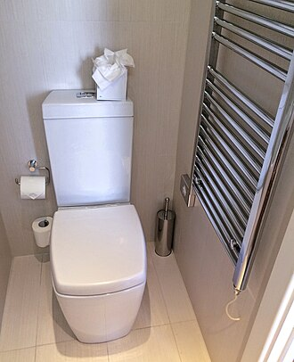
shield
/'ʃi:ld/
n. 盾, 防卫物, 保护者, 屏蔽
a protective covering or structure
4.3
furniture
/'fәnitʃә/
n. 家具, 帆具
furnishings that make a room or other area ready for occupancy
4.29
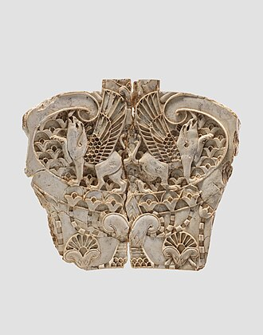
garage
/gә'rɑ:ʒ. 'gærɑ:ʒ/
n. 车库, 汽车修理厂, 机库
an outbuilding (or part of a building) for housing automobiles
4.25
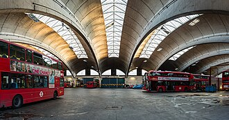
shelter
/'ʃeltә/
n. 庇护所, 避难所, 庇护, 隐蔽处, 掩蔽
a structure that provides privacy and protection from danger
4.25
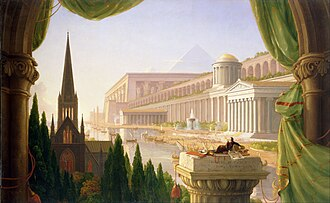
pub
/pʌb/
n. 酒馆, 客栈
tavern consisting of a building with a bar and public rooms; often provides light meals
4.23
shed
/ʃed/
n. 车棚, 小屋, 脱落之物, 分水岭
an outbuilding with a single story; used for shelter or storage
4.23
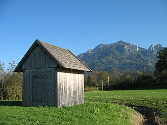
fence
/fens/
n. 围墙, 栅栏, 买卖赃物的人, 剑术
a barrier that serves to enclose an area
4.21
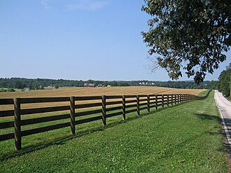
basement
/'beismәnt/
n. 地下室, 墙脚
the lowermost portion of a structure partly or wholly below ground level; often used for storage
4.18
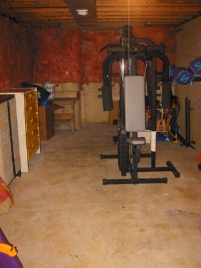
carpet
/'kɑ:pit/
n. 地毯, 地毯状物
floor covering consisting of a piece of thick heavy fabric (usually with nap or pile)
4.18
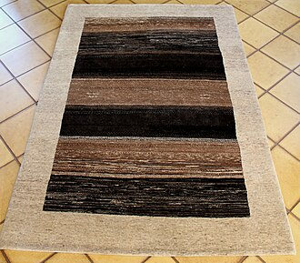
couch
/kautʃ/
n. 长沙发, 睡椅, 卧榻
an upholstered seat for more than one person
4.17
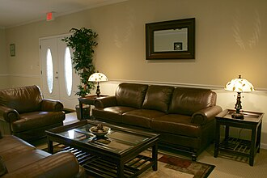
dam
/dæm/
n. 水坝, 障碍
a barrier constructed to contain the flow of water or to keep out the sea
4.17
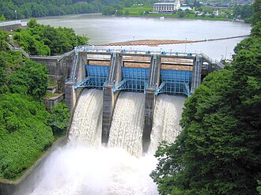
casino
/kә'si:nәu/
n. 卡西诺赌场, 卡西诺牌戏
a public building for gambling and entertainment
4.16
barrier
/'bæriә/
n. 障碍, 栅栏
a structure or object that impedes free movement
4.15
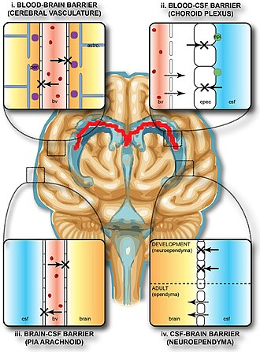
classroom
/'klɑ:sru:m/
n. 教室
a room in a school where lessons take place
4.15
plug
/plʌg/
n. 塞子, 栓, 插头
blockage consisting of an object designed to fill a hole tightly
4.14
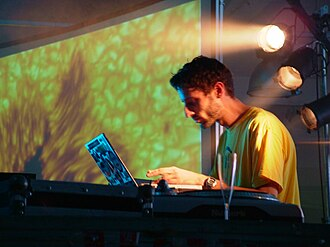
cabin
/'kæbin/
n. 小屋, 客舱
small room on a ship or boat where people sleep
4.13
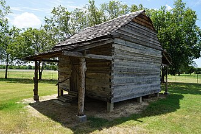
cage
/keidʒ/
n. 笼, 牢房, 战俘营
an enclosure made or wire or metal bars in which birds or animals can be kept
4.13
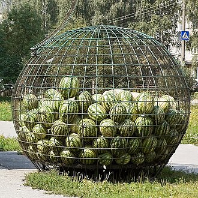
closet
/'klɒzit/
n. 壁橱, 小室
a small room (or recess) or cabinet used for storage space
4.13
embassy
/'embәsi/
n. 大使馆, 大使馆全体人员
a diplomatic building where ambassadors live or work
4.13
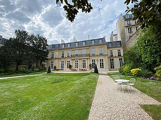
haven
/'heivn/
n. 港, 避难所, 安息所
a shelter serving as a place of safety or sanctuary
4.13
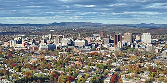
dive
/daiv/
n. 潜水, 跳水
a cheap disreputable nightclub or dance hall
4.12
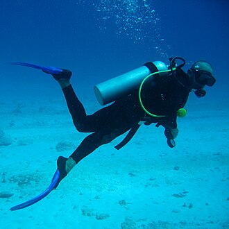
throne
/'θrәun/
n. 王座, 君主
the chair of state for a monarch, bishop, etc.
4.11
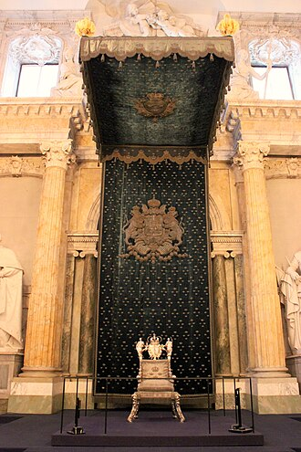
booth
/bu:θ/
n. 亭, 摊棚
a table (in a restaurant or bar) surrounded by two high-backed benches
4.1
cafe
/kɑ:'fei/
n. 咖啡馆, 酒店
a small restaurant where drinks and snacks are sold
4.09
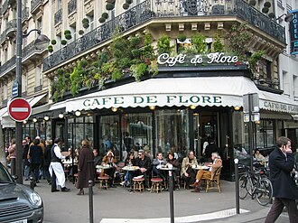
console兼类词
/kәn'sәul/
n. 控制台
a small table fixed to a wall or designed to stand against a wall
4.08
blanket
/'blæŋkit/
n. 毛毯, 毯子
bedding that keeps a person warm in bed
4.07
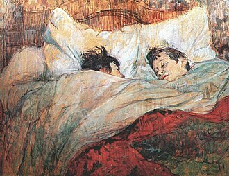
inn
/in/
n. 旅馆, 客栈
a hotel providing overnight lodging for travelers
4.07
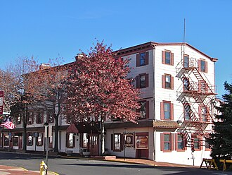
grocery
/'grәusәri/
n. 食品杂货店, 食品杂货业
a marketplace where groceries are sold
4.06
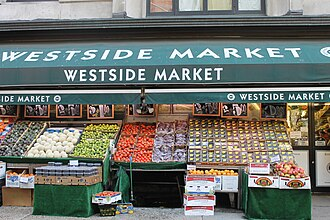
tent
/tent/
n. 帐篷, 帷幕, 住处, 塞条, 塞子
a portable shelter (usually of canvas stretched over supporting poles and fastened to the ground with ropes and pegs)
4.05
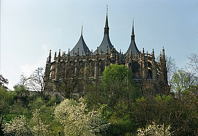
chapel
/'tʃæpәl/
n. 小教堂, 礼拜式
a place of worship that has its own altar
4.03
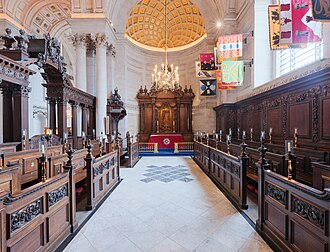
lobby
/'lɒbi/
n. 大厅, 休息室, 游说议员者
a large entrance or reception room or area
4.03
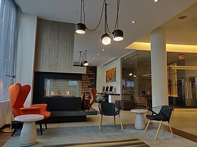
helmet
/'helmit/
n. 钢盔, 盔, 防护帽
armor plate that protects the head
4.02
cottage
/'kɒtidʒ/
n. 小屋, 茅舍
a small house with a single story
4.0
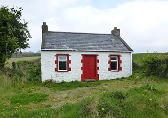
outlet
/'autlet/
n. 出口, 发泄方法, 市场
a place of business for retailing goods
4.0
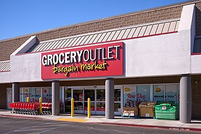
asylum
/ә'sailәm/
n. 庇护, 收容所
a shelter from danger or hardship
3.99
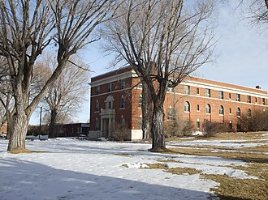
barn
/bɑ:n/
n. 谷仓
an outlying farm building for storing grain or animal feed and housing farm animals
3.99
cathedral
/kә'θi:drәl/
n. 大教堂
any large and important church
3.99
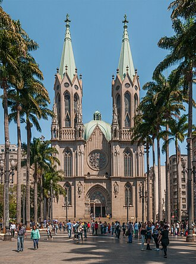
dock
/dɒk/
n. 码头, 船坞, 被告席, 尾巴的骨肉部分
an enclosure in a court of law where the defendant sits during the trial
3.99
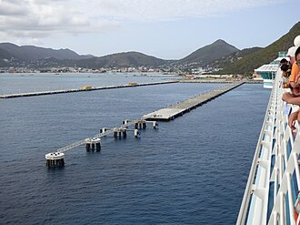
armor
/'ɑ:mә/
n. 盔甲, 潜水服, 装甲
protective covering made of metal and used in combat
3.97
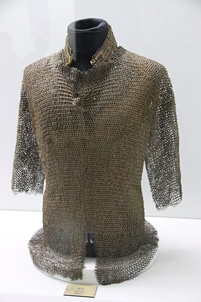
skirt
/skә:t/
n. 裙子, 下摆, 边缘, 郊区
cloth covering that forms the part of a garment below the waist
3.96
cab
/kæb/
n. 出租车, 出租汽车, 出租马车
a compartment at the front of a motor vehicle or locomotive where driver sits
3.95
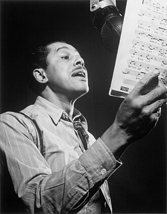
locker
/'lɒkә/
n. 抽屉, 小柜, 上锁人
a storage compartment for clothes and valuables; usually it has a lock
3.95
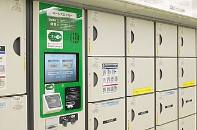
sleeve
/sli:v/
n. 袖子, 套管
the part of a garment that is attached at the armhole and that provides a cloth covering for the arm
3.93
lounge
/laundʒ/
n. 闲逛, 休闲室, 长沙发
an upholstered seat for more than one person
3.92
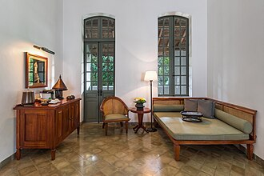
fountain
/'fauntin/
n. 水源, 源, 喷泉, 泉水, 本源
a structure from which an artificially produced jet of water arises
3.91
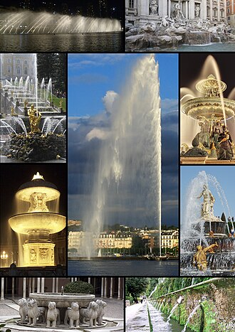
monument
/'mɒnjumәnt/
n. 纪念碑, 纪念物, 石碑
a structure erected to commemorate persons or events
3.9
rack
/ræk/
n. 架, 行李架, 饲草架, 搁物架, 痛苦, 折磨, 齿条, 行云团
framework for holding objects
3.9
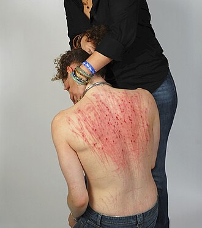
vault
/vɒ:lt/
n. 拱顶, 窖, 地下室, 撑竿跳, 穹窿
a burial chamber (usually underground)
3.9
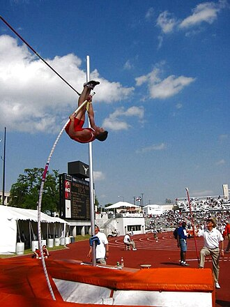
mosque
/mɒsk/
n. 清真寺
(Islam) a Muslim place of worship that usually has a minaret
3.89
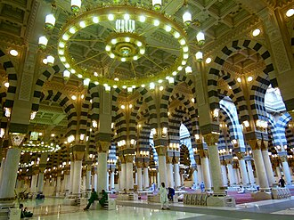
nursery
/'nә:sәri/
n. 托儿所, 苗圃, 温床
a child's room for a baby
3.89
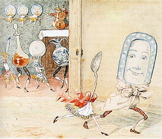
umbrella
/ʌm'brelә/
n. 伞, 雨伞, 保护伞
a lightweight handheld collapsible canopy
3.89
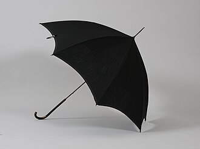
abbey
/'æbi/
n. 大修道院
a church associated with a monastery or convent
3.88
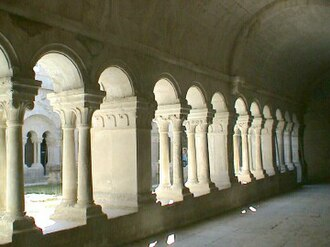
lining
/'lainiŋ/
n. 衬里, 内层, 衬垫
a protective covering that protects an inside surface
3.88
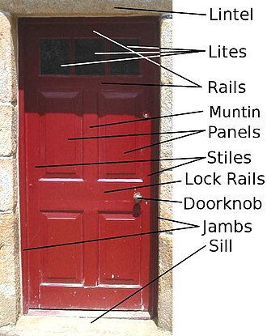
terrace
/'terәs/
n. 阶地, 梯田, 房屋之平顶, 阳台, 沿岸防地, 露台
usually paved outdoor area adjoining a residence
3.88
salon
/'sælɔ:ŋ/
n. 大会客室, 大厅, 客厅, 交谊室, 沙龙, 美术展览馆, 画廊, 美容院, 发廊
gallery where works of art can be displayed
3.87
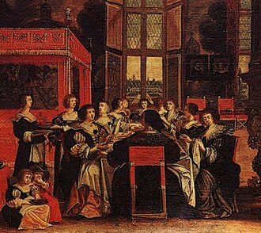
curtain
/'kә:tәn/
n. 帐, 幕, 窗帘
hanging cloth used as a blind (especially for a window)
3.86
wheelchair
/'hwi:l.tʃєә/
n. 轮椅
a movable chair mounted on large wheels; for invalids or those who cannot walk; frequently propelled by the occupant
3.86
kirk
/kә:k/
n. 教会, 苏格兰教会
a Scottish church
3.85
porch
/pɒ:tʃ/
n. 门廊, 走廊
a structure attached to the exterior of a building often forming a covered entrance
3.85
grill
/gril/
n. 烤架, 铁格子, 烤肉
a restaurant where food is cooked on a grill
3.84
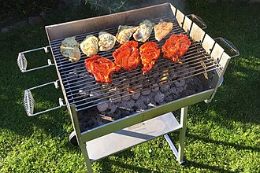
hut
/hʌt/
n. 小屋, 茅舍, 临时军营
temporary military shelter
3.84
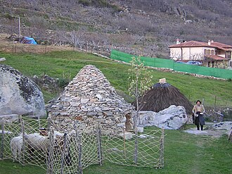
marina
/mә'rinә/
n. 码头
a fancy dock for small yachts and cabin cruisers
3.84
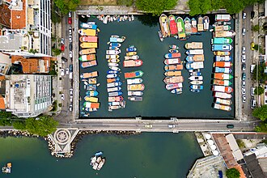
mat
/mæt/
n. 垫, 丛, 衬边
a thick flat pad used as a floor covering
3.84
slate roof复合词
/sleit ru:f/
板岩顶板
a roof covered with slate
3.83
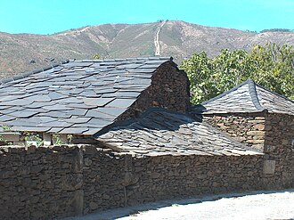
manor
/'mænә/
n. 庄园
the mansion of a lord or wealthy person
3.81
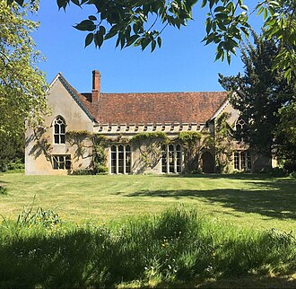
sofa
/'sәufә/
n. 沙发
an upholstered seat for more than one person
3.81
swinging door复合词
/ˈswiŋiŋ dɔ:/
n. 摇门
a door that swings on a double hinge; opens in either direction
3.81
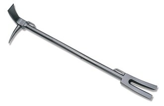
wardrobe
/'wɒ:drәub/
n. 衣橱, 衣室, 全部衣服
a tall piece of furniture that provides storage space for clothes; has a door and rails or hooks for hanging clothes
3.8
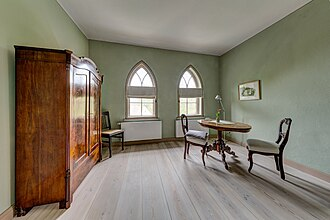
sofa bed复合词
/ˈsəufə bed/
n. 坐卧两用的长沙发
a sofa that can be converted into a bed
3.79
stall
/stɒ:l/
n. 厩, 停车处, 牧师职位, 货摊, 托辞, 拖延
a compartment in a stable where a single animal is confined and fed
3.79
balcony
/'bælkәni/
n. 阳台, 戏院楼厅
an upper floor projecting from the rear over the main floor in an auditorium
3.78
detached house复合词
/dɪˈtætʃt haus/
独立式住宅; 单门独户
a house that stands alone
3.78
drawer
/'drɒ:ә/
n. 抽屉, 开票人
a boxlike container in a piece of furniture; made so as to slide in and out
3.78
dwelling house复合词
[法] 住宅
housing that someone is living in
3.78
first balcony复合词
= dress circle
first or lowest balcony
3.78
forge
/fɒ:dʒ/
n. 熔炉, 铁工厂
furnace consisting of a special hearth where metal is heated before shaping
3.78
observation dome复合词
/ˌɔbzə:ˈveiʃən dəum/
观察装置，了望圆顶
lookout consisting of a dome-shaped observatory
3.78
pumping station复合词
/ˈpʌmpiŋ ˈsteiʃən/
泵站
a house where pumps (e.g. to irrigate) are installed and operated
3.78
supermarket
/'sju:pәmɑ:kit/
n. 超级市场
a large self-service grocery store selling groceries and dairy products and household goods
3.78
beacon light复合词
/ˈbi:kən lait/
灯标; 标灯
a tower with a light that gives warning of shoals to passing ships
3.77
coat rack复合词
衣帽架
a rack with hooks for temporarily holding coats and hats
3.77
floating dock复合词
浮动船坞
dry dock that can be submerged under a vessel and then raised
3.77
fortress
/'fɒ:tris/
n. 城堡, 要塞
a fortified defensive structure
3.77
prop
/prɒp/
n. 支柱, 支持者, 倚靠人, 道具, 螺旋桨
a support placed beneath or against something to keep it from shaking or falling
3.77
shower curtain复合词
/ˈʃauə ˈkə:tn/
浴帘
a curtain that keeps water from splashing out of the shower area
3.77
barber chair复合词
/ˈbɑ:bə tʃɛə/
打拌子，椅状劈裂
a large fixed adjustable chair in which barbers seat their customers
3.76
cow barn复合词
un. 乳牛舍
a barn for cows
3.76
retaining wall复合词
/rɪˈteɪnɪŋ/
n. 拥壁，挡土墙，护岸
a wall that is built to resist lateral pressure (especially a wall built to prevent the advance of a mass of earth)
3.76
yacht chair复合词
折叠帆布椅
a light folding armchair for outdoor use
3.76
coffee stall复合词
卖咖啡的流动摊
a stand (usually movable) selling hot coffee and food (especially at night)
3.75
body armour复合词
/ˈbɔdi ˈɑ:mə/
n. （军人、警察等穿的）防弹衣, 防护服
armor that protects the wearer's whole body
3.74
departure lounge复合词
/diˈpɑ:tʃə laundʒ/
n. 候机室；启程处
lounge where passengers can await departure
3.74
dwelling
/'dweliŋ/
n. 住处
housing that someone is living in
3.74
gambling den复合词
赌窟,赌窝
a public building in which a variety of games of chance can be played (operated as a business)
3.74
hedge
/hedʒ/
n. 树篱, 障碍, 套头交易
a fence formed by a row of closely planted shrubs or bushes
3.74
pipe rack复合词
/paip ræk/
烟斗架
a rack for holding a smoker's pipes
3.74
prayer mat复合词
/prɛə mæt/
n. （祈祷时的）跪垫
a small rug used by Muslims during their devotions
3.74
coil
/kɒil/
n. 线圈, 盘绕, 骚动, 卷
a structure consisting of something wound in a continuous series of loops
3.73
dish rack复合词
碗碟架；盘碟架
a rack for holding dishes as dishwater drains off of them
3.73
hank
/hæŋk/
n. 一束, 一圈
a coil of rope or wool or yarn
3.73
shrine
/ʃrain/
n. 圣地, 神龛, 庙
a place of worship hallowed by association with some sacred thing or person
3.73
supper club复合词
/ˈsʌpə klʌb/
n. （尤指小型而豪华的）夜总会
usually a small luxurious nightclub
3.73
butcher shop复合词
/ˈbutʃə ʃɔp/
肉店
a shop in which meat and poultry (and sometimes fish) are sold
3.72
curb roof复合词
/kə:b ru:f/
复折屋顶，斜折线形屋顶
a roof with two or more slopes on each side of the ridge
3.72
radar dome复合词
/ˈreidə dəum/
雷达天线（整流）罩
a housing for a radar antenna; transparent to radio waves
3.72
rug
/rʌg/
n. 小块地毯, 揭露某人
floor covering consisting of a piece of thick heavy fabric (usually with nap or pile)
3.72
baggage claim复合词
/ˈbæɡidʒ kleim/
领取行李
an area in an airport where arriving passengers can collect the luggage that has been carried in the hold of the aircraft
3.71
barrel vault复合词
/ˈbærəl vɔ:lt/
n. 桶形穹窿
the simplest form of vault; a single continuous arch
3.71
circus tent复合词
圆形马戏帐篷
a canvas tent to house the audience at a circus performance
3.71
coating
/'kәutiŋ/
n. 涂层, 上衣衣料
a thin layer covering something
3.71
lake dwelling复合词
/leik ˈdwelɪŋ/
n. 在湖上的木架房屋; 湖上住宅
dwelling built on piles in or near a lake; specifically in prehistoric villages
3.71
observatory
/әb'zә:vәtәri/
n. 天文台, 气象台, 了望台
a building designed and equipped to observe astronomical phenomena
3.71
ring armour复合词
na. 连环甲
(Middle Ages) flexible armor made of interlinked metal rings
3.71
shower stall复合词
/ˈʃauə stɔ:l/
淋浴隔间，淋浴室
booth for washing yourself, usually in a bathroom
3.71
tract house复合词
/trækt haus/
（设计相同的）屋村住宅
one of many houses of similar design constructed together on a tract of land
3.71
chain armour复合词
铁环串连做成的盔甲
(Middle Ages) flexible armor made of interlinked metal rings
3.7
file folder复合词
/fail ˈfəʊldə/
卷宗夹，文件夹
folder that holds papers together in a filing cabinet
3.7
folding chair复合词
/ˈfəʊldɪŋ tʃɛə/
折（叠）椅
a chair that can be folded flat for storage
3.7
ski rack复合词
/ski: ræk/
雪橇架
a carrier for holding skis on top of a vehicle
3.7
umbrella tent复合词
/ʌmˈbrelə tent/
伞形帐篷
a small tent with a single supporting pole and radiating metal ribs
3.7
armour plate复合词
[机] 装甲板
specially hardened steel plate used to protect fortifications or vehicles from enemy fire
3.69
mart
/mɑ:t/
n. 商业中心, 市场
an area in a town where a public mercantile establishment is set up
3.69
plate armour复合词
/pleit ˈɑ:mə/
装甲板
specially hardened steel plate used to protect fortifications or vehicles from enemy fire
3.69
throw rug复合词
小张地毯（等于scatter rug）
a small rug; several can be used in a room
3.69
folding door复合词
/ˈfəʊldɪŋ dɔ:/
折叠门
an interior door that opens by folding back in sections (rather than by swinging on hinges)
3.68
living room复合词
客厅, 起居室
a room in a private house or establishment where people can sit and talk and relax
3.68
luggage carrier复合词
/ˈlʌɡidʒ ˈkæriə/
n. 载物架，行囊架
carrier (as behind a bicycle seat) for luggage
3.68
rocking chair复合词
/'rɔkiŋ/
摇椅
a chair mounted on rockers
3.68
sewing room复合词
/ˈsəʊɪŋ ru:m/
缝纫室
a room set aside for sewing
3.68
bakery
/'beikәri/
n. 面包店
a workplace where baked goods (breads and cakes and pastries) are produced or sold
3.67
brake cylinder复合词
/breik ˈsilində/
制动圆筒[气缸]
a cylinder that contains brake fluid that is compressed by a piston
3.67
bunker
/'bʌŋkә/
n. 煤仓, 沙坑, 暗堡
a hazard on a golf course
3.67
cargo hatch复合词
/ˈkɑ:ɡəu hætʃ/
货舱口
hatch opening into the cargo compartment
3.67
partition
/pɑ:'tiʃәn/
n. 分割, 隔离物, 隔墙, 财产分割
a vertical structure that divides or separates (as a wall divides one room from another)
3.67
pedestrian bridge复合词
/piˈdestriən bridʒ/
n. 人行天桥
a bridge designed for pedestrians
3.67
saddle roof复合词
/ˈsædl ru:f/
n. 鞍状屋顶
a double sloping roof with a ridge and gables at each end
3.67
soda fountain复合词
冷饮柜
a counter where ice cream and sodas and sundaes are prepared and served
3.67
brewery
/'bru:әri/
n. 啤酒厂, 酿酒厂
a plant where beer is brewed by fermentation
3.66
exhaust hood复合词
[化] 排汽室
metal covering leading to a vent that exhausts smoke or fumes
3.66
fallout shelter复合词
/ˈfɔ:lˌaʊt ˈʃeltə/
沉降物掩蔽所，放射性微粒掩蔽所，放射性物体掩蔽室
a shelter to protect occupants from the fallout from an atomic bomb
3.66
funk hole复合词
防空洞
dugout as a place of safe retreat (when in a funk)
3.66
textile mill复合词
/ˈtekstail mil/
n. 纺织厂
a factory for making textiles
3.66
tile roof复合词
/tail ru:f/
瓦屋顶
a roof made of fired clay tiles
3.66
towel rack复合词
毛巾架
a rack consisting of one or more bars on which towels can be hung
3.66
bathing machine复合词
n. 更衣车
a building containing dressing rooms for bathers
3.65
bottle cork复合词
/ˈbɔtl kɔ:k/
瓶塞
the plug in the mouth of a bottle (especially a wine bottle)
3.65
bowling alley复合词
/ˈbəuliŋ ˈæli/
n. 保龄球场, 狭长木制跑道
a building that contains several alleys for bowling
3.65
courtyard
/'kɒ:tjɑ:d/
n. 庭院, 天井
an area wholly or partly surrounded by walls or buildings
3.65
monastery
/'mɒnәstәri/
n. 修道院, 僧侣
the residence of a religious community
3.65
bicycle rack复合词
自行车托架
a rack for parking bicycles
3.64
cozy兼类词
/'kәuzi/
n. (茶壶等的)保暖罩, 舒适的座位
a padded cloth covering to keep a teapot warm
3.64
drafting table复合词
绘图桌
a worktable with adjustable top
3.64
maternity hospital复合词
[医] 产院
a hospital that provides care for women during pregnancy and childbirth and for newborn infants
3.64
polling booth复合词
投票亭；[法] 选举场所, 投票站
a temporary booth in a polling place which people enter to cast their votes
3.64
prayer rug复合词
/prɛə rʌɡ/
祈祷毯（回教徒祈祷时用的跪毯）; 拜毯
a small rug used by Muslims during their devotions
3.64
attic
/'ætik/
n. 阁楼, 顶楼
floor consisting of open space at the top of a house just below roof; often used for storage
3.63
cache
/kæʃ/
n. 隐藏所, 隐藏的粮食或物资, 贮藏物, 高速缓冲存储器
a hidden storage space (for money or provisions or weapons)
3.63
condo
/kәn'dәu/
n. 共同统治, 共管下的政府, 共管, 多层公寓大楼, 由个人占用的一套公寓房间
one of the dwelling units in a condominium
3.63
distributor housing复合词
/dɪˈstrɪbjətə ˈhauziŋ/
分电器外壳
the housing that supports the distributor cam
3.63
hash house复合词
经济餐馆
an inexpensive restaurant
3.63
furnace
/'fә:nis/
n. 火炉, 熔炉, 考验
an enclosed chamber in which heat is produced to heat buildings, destroy refuse, smelt or refine ores, etc.
3.62
pavilion
/pә'viljәn/
n. 楼阁, 亭子, 大帐篷, 观众席
large and often sumptuous tent
3.62
quartz mill复合词
/kwɔ:ts mil/
石英磨机
a stamp mill for stamping quartz
3.62
adobe house复合词
/əˈdəʊbi: haus/
土坯房屋
a house built of sod or adobe laid in horizontal courses
3.61
brake lining复合词
[化] 闸衬片; 制动衬片; 制动闸衬
the lining on the brake shoes that comes in contact with the brake drum
3.61
enclosure
/in'klәuʒә/
n. 附件, 围墙, 围绕
a structure consisting of an area that has been enclosed for some purpose
3.61
furnace room复合词
/ˈfə:nis ru:m/
n. 炉子间
a room (usually in the basement of a building) that contains a furnace for heating the building
3.61
motel
/mәu'tel/
n. 汽车旅馆
a motor hotel
3.61
oil furnace复合词
[机] 油炉
a furnace that burns oil
3.61
pier arch复合词
un. 墩拱
an arch supported on piers
3.61
rec room复合词
/'rekrum/
n. 娱乐室, 康健中心
a room equipped for informal entertaining
3.61
storey
/'stɔ:ri/
n. 楼, 楼层, 层楼
a structure consisting of a room or set of rooms at a single position along a vertical scale
3.61
tea cozy复合词
茶壶保暖套
a padded cloth covering to keep a teapot warm
3.61
trunk lid复合词
/trʌŋk lid/
后车箱盖
hinged lid for a trunk
3.61
burial vault复合词
/ˈberiəl vɔ:lt/
穹形墓穴
a burial chamber (usually underground)
3.6
cellar
/'selә/
n. 地窖, 地下室, 藏酒
the lowermost portion of a structure partly or wholly below ground level; often used for storage
3.6
cockpit
/'kɒkpit/
n. 驾驶员座舱, 战场
compartment where the pilot sits while flying the aircraft
3.6
cocktail lounge复合词
供应鸡尾酒等饮料的休息室
a barroom in a hotel or restaurant where cocktails are served
3.6
distributor cap复合词
/dɪˈstrɪbjətə kæp/
分电器盖
the cap of the distributor that holds in place the wires from the distributor to the spark plugs
3.6
gas furnace复合词
[机] 燃气炉
a furnace that burns gas
3.6
gin mill复合词
下等酒巴,小酒店
tavern consisting of a building with a bar and public rooms; often provides light meals
3.6
cavity wall复合词
[医] 洞壁
a wall formed of two thicknesses of masonry with a space between them
3.59
checkout counter复合词
/ˈtʃekaut ˈkauntə/
n. 收银台
a counter in a supermarket where you pay for your purchases
3.59
electric furnace复合词
[化] 电炉
any furnace in which the heat is provided by an electric current
3.59
lookout station复合词
/ˈlʊkˌaʊt ˈsteiʃən/
了望站，观察哨位
a structure commanding a wide view of its surroundings
3.59
onion dome复合词
/ˈʌnjən dəum/
洋葱形屋顶（多见于俄罗斯教堂）; 圆顶
a dome that is shaped like a bulb; characteristic of Russian and Byzantine church architecture
3.59
pile dwelling复合词
/pail ˈdwelɪŋ/
[法]岸边住房
dwelling built on piles in or near a lake; specifically in prehistoric villages
3.59
plaster cast复合词
石膏模型, 石膏绷带；[医] 筒形石膏夹, 管型石膏夹
bandage consisting of a firm covering (often made of plaster of Paris) that immobilizes broken bones while they heal
3.59
cliff dwelling复合词
悬崖屋
a rock and adobe dwelling built on sheltered ledges in the sides of a cliff
3.58
courtroom
/'kɒ:trum/
n. 法庭, 审判室
a room in which a lawcourt sits
3.58
dorm
/dɒ:m/
n. 宿舍
a college or university building containing living quarters for students
3.58
lumber room复合词
na. 杂物房
a storeroom in a house where odds and ends can be stored (especially furniture)
3.58
maternity ward复合词
产科病房,产房
a hospital ward that provides care for women during pregnancy and childbirth and for newborn infants
3.58
mosquito net复合词
/məsˈki:təu net/
n. 蚊帐
a fine net or screen (especially around beds) to protect against mosquitos
3.58
root cellar复合词
(储藏蔬菜的)地窖
an excavation where root vegetables are stored
3.58
wicket door复合词
/ˈwikit dɔ:/
便门; 边门
small gate or door (especially one that is part of a larger door)
3.58
wrapping
/'ræpiŋ/
n. 用于包裹的材料
the covering (usually paper or cellophane) in which something is wrapped
3.58
cloak
/klәuk/
n. 斗蓬, 大氅, 掩护
anything that covers or conceals
3.57
dorm room复合词
宿舍；寝室
a large sleeping room containing several beds
3.57
dungeon
/'dʌndʒәn/
n. 地牢
the main tower within the walls of a medieval castle or fortress
3.57
piano stool复合词
na. 钢琴凳
a stool for piano players; usually adjustable in height
3.57
tank furnace复合词
[化] 池窑
furnace into one end of which a batch of measured raw materials is shoveled and from the other end molten glass is obtained
3.57
wine cellar复合词
/wain ˈselə/
n. 酒之贮藏室, 酒窖, 一窖酒; 藏酒窑
storage space where wines are stored
3.57
aquarium
/ә'kwєәriәm/
n. 水族馆, 养鱼池, 水草缸
a tank or pool or bowl filled with water for keeping live fish and underwater animals
3.56
chimney corner复合词
壁炉角
a corner by a fireplace
3.56
consulate
/'kɒnsjulit/
n. 领事, 领事任期, 领事馆
diplomatic building that serves as the residence or workplace of a consul
3.56
fencing
/'fensiŋ/
n. 围墙, 剑术
a barrier that serves to enclose an area
3.56
fraternity house复合词
/frəˈtə:niti haus/
n. （美国大学生）联谊会会堂
a house used as a residence by a chapter of a fraternity
3.56
squirrel cage复合词
无休止的乏味工作
cage with a cylindrical framework that rotates as a small animal runs inside it
3.56
storm cellar复合词
/stɔ:m ˈselə/
n. 防风的地窖
an underground shelter where you can go until a storm passes
3.56
gift wrapping复合词
礼品包装
ornamental wrapping for gifts
3.55
lighthouse
/'laithaus/
n. 灯塔
a tower with a light that gives warning of shoals to passing ships
3.55
luggage rack复合词
/ˈlʌɡidʒ ræk/
行李架
carrier for holding luggage above the seats of a train or on top of a car
3.55
obstruction
/әb'strʌʃәn/
n. 障碍, 妨碍, 闭塞物
any structure that makes progress difficult
3.55
tavern
/'tævәn/
n. 酒馆, 客栈
a building with a bar that is licensed to sell alcoholic drinks
3.55
blast furnace复合词
鼓风炉；[化] 高炉; 鼓风炉
a furnace for smelting of iron from iron oxide ores; combustion is intensified by a blast of air
3.54
boutique
/bu:'ti:k/
n. 专卖流行衣服的小商店
a shop that sells women's clothes and jewelry
3.54
buffet
/'bʌfit/
n. 自助餐, 小卖部, 碗橱, 殴打, 冲击
a piece of furniture that stands at the side of a dining room; has shelves and drawers
3.54
fireplace
/'faiәpleis/
n. 壁炉
an open recess in a wall at the base of a chimney where a fire can be built
3.54
pup tent复合词
/pʌp tent/
n. （楔形）小帐篷, 露营用三角小帐篷
a wedge-shaped tent; usually without a floor or windows
3.54
wicket gate复合词
/ˈwikit ɡeit/
（装在大门上的）小门; 边门
small gate or door (especially one that is part of a larger door)
3.54
oil burner复合词
[化] 油烧嘴; 油燃烧器；[经] 燃油的发动机
a furnace that burns oil
3.53
radio chassis复合词
/ˈreidiəu ˈʃæsi:/
无线电仪器底板
a chassis for a radio receiver
3.53
tuck shop复合词
/tʌk ʃɔp/
n. 糖果食品店
a candy store in Great Britain
3.53
ballroom
/'bɒ:lrum/
n. 舞厅, 跳舞场
large room used mainly for dancing
3.52
canopy
/'kænәpi/
n. 天篷, 遮篷, 苍穹
the transparent covering of an aircraft cockpit
3.52
department store复合词
百货公司；[经] 百货商店
a large retail store organized into departments offering a variety of merchandise; commonly part of a retail chain
3.52
grave mound复合词
/ɡreiv maund/
坟头；坟堆；土冢
(archeology) a heap of earth placed over prehistoric tombs
3.52
music stool复合词
/ˈmju:zik stu:l/
琴凳
a stool for piano players; usually adjustable in height
3.52
oyster bar复合词
牡蛎餐馆
a bar (as in a restaurant) that specializes in oysters prepared in different ways
3.52
shopping center复合词
购物中心, 商业区；[经] 市场, 购物中心, 市郊商店区
mercantile establishment consisting of a carefully landscaped complex of shops representing leading merchandisers; usually includes restaurants and a convenient parking area; a modern version of the traditional marketplace
3.52
stool
/stu:l/
n. 凳子, 大便, 粪便, 厕所
a simple seat without a back or arms
3.52
weir
/wiә/
n. 堰, 鱼梁
a low dam built across a stream to raise its level or divert its flow
3.52
auditorium
/.ɒ:di'tɒ:riәm/
n. 听众席, 礼堂
the area of a theater or concert hall where the audience sits
3.51
cuff
/kʌf/
n. 袖口, 一巴掌
the lap consisting of a turned-back hem encircling the end of the sleeve or leg
3.51
diminished arch复合词
/diˈminiʃt ɑ:tʃ/
平圆拱
an arch whose height is less than half its width
3.51
loft
/lɒft/
n. 阁楼, 鸽房, 楼上
floor consisting of a large unpartitioned space over a factory or warehouse or other commercial space
3.51
step stool复合词
/step stu:l/
[医]踏凳
a stool that has one or two steps that fold under the seat
3.51
vapor bath复合词
[医] 蒸汽浴
a room that can be filled with steam in which people bathe; `vapour bath' is a British term
3.51
vapor lock复合词
/ˈveipə lɔk/
气阻, 气封
a stoppage in a pipeline caused by gas bubbles (especially a stoppage that develops in hot weather in an internal-combustion engine when fuel in the gas line boils and forms bubbles that block the flow of gasoline to the carburetor)
3.51
cradle
/'kreidl/
n. 摇篮, 发祥地, 孩提时代
a baby bed with sides and rockers
3.5
adjoining room复合词
/əˈdʒɔɪnɪŋ ru:m/
邻室
a hotel room that shares a wall with another hotel room
3.49
chimney breast复合词
/ˈtʃimni brest/
n. 壁炉腔
walls that project out from the wall of a room and surround the chimney base
3.49
derrick
/'derik/
n. 起重机, 小偷
a framework erected over an oil well to allow drill tubes to be raised and lowered
3.49
flap
/flæp/
n. 飘, 摆动, 拍打, 拍打声, 片状垂悬物
any broad thin and limber covering attached at one edge; hangs loose or projects freely
3.49
knob
/nɒb/
n. 把手, 瘤, 旋钮, 球形突出物
a circular rounded projection or protuberance
3.49
particle detector复合词
/ˈpɑ:tikl dɪˈtektə/
粒子检测器，粒子探测器
a chamber in which particles can be made visible
3.49
refinery
/ri'fainәri/
n. 精炼厂
an industrial plant for purifying a crude substance
3.49
amen corner复合词
/eɪˈmen ˈkɔ:nə/
教堂的右前部座位, （会议等场合）支持发言者的人的座位
area reserved for persons leading the responsive `amens'
3.48
concentration camp复合词
/ˌkɔnsənˈtreiʃən kæmp/
n. 集中营
a penal camp where political prisoners or prisoners of war are confined (usually under harsh conditions)
3.48
convent
/'kɒnvәnt/
n. 女修道会
a religious residence especially for nuns
3.48
crib
/krib/
n. 婴儿小床, 食槽, 蓄栏
baby bed with high sides made of slats
3.48
dressing room复合词
/ˈdresiŋ ru:m/
n. 更衣室; 化妆室; （舞台的）后台
a room in which you can change clothes
3.48
oil refinery复合词
[化] 石油加工厂；[经] 炼油厂
a refinery for petroleum
3.48
paddle box复合词
/ˈpædl bɔks/
n. 明轮外壳; 明轮罩
a wooden covering for the upper part of a paddlewheel
3.48
cleaners
/'kli:nәs/
n. 干洗店
shop where dry cleaning is done
3.46
privy兼类词
/'privi/
n. 有利害关系的人, 当事人, 厕所
a room or building equipped with one or more toilets
3.46
stuffing box复合词
[化] 填料箱
a small chamber in which packing is compressed around a reciprocating shaft or piston to form a seal
3.46
sugar refinery复合词
/ˈʃuɡə rɪˈfaɪnəri:/
n. 炼糖厂
a refinery for sugar
3.46
flea market复合词
跳蚤市场
an open-air street market for inexpensive or secondhand articles
3.45
pinnacle
/'pinәkl/
n. 小尖塔, 尖峰, 高峰, 极点
(architecture) a slender upright spire at the top of a buttress of tower
3.45
pocket flap复合词
/ˈpɔkit flæp/
[医]袋状皮瓣
a flap that covers the access to a pocket
3.45
synagogue
/'sinәgɒg/
n. 犹太人集会, 犹太教会堂, 犹太教
(Judaism) the place of worship for a Jewish congregation
3.45
trumpet arch复合词
/ˈtrʌmpit ɑ:tʃ/
喇叭形拱
a conical squinch
3.45
art school复合词
/ɑ:t sku:l/
美术学校
a school specializing in art
3.44
bunk bed复合词
双层铺
beds built one above the other
3.44
cafeteria
/.kæfi'tiәriә/
n. 自助餐厅
a restaurant where you serve yourself and pay a cashier
3.44
cupboard
/'kʌpbɒ:d/
n. 食橱, 碗柜, 餐具柜
a small room (or recess) or cabinet used for storage space
3.44
dining room复合词
饭厅
a room used for dining
3.44
lodging
/'lɒdʒiŋ/
n. 寄宿处, 寄宿
structures collectively in which people are housed
3.44
lodging house复合词
[法] 住宅, 第宅
a house where rooms are rented
3.44
patio
/'pɑ:tiәu/
n. 屋子与花园之间的一片供晴天休息用的石砌空地
usually paved outdoor area adjoining a residence
3.44
raft foundation复合词
/rɑ:ft faunˈdeiʃən/
木筏基础; 满堂基础
a foundation (usually on soft ground) consisting of an extended layer of reinforced concrete
3.44
sectional兼类词
/'sekʃәnl/
n. 组合式家具
a piece of furniture made up of sections that can be arranged individually or together
3.44
furnace lining复合词
[机] 炉衬
lining consisting of material with a high melting point; used to line the inside walls of a furnace
3.43
hostel
/'hɒstәl/
n. 青年招待所, 宿舍, 旅店
a hotel providing overnight lodging for travelers
3.43
lower berth复合词
/ˈləuə bɜ:θ/
下铺
the lower of two berths
3.43
piston chamber复合词
/ˈpistən ˈtʃeimbə/
活塞顶内燃烧室
a chamber within which piston moves
3.43
saloon
/sә'lu:n/
n. 大厅, 沙龙, 酒吧, 会客室
a room or establishment where alcoholic drinks are served over a counter
3.43
shack
/ʃæk/
n. 陋屋, 棚屋
small crude shelter used as a dwelling
3.43
bookstore
/'bukstɒ:/
n. 书店
a shop where books are sold
3.42
burial mound复合词
/ˈberiəl maund/
古坟
(archeology) a heap of earth placed over prehistoric tombs
3.42
farmhouse
/'fɑ:mhaus/
n. 农舍
house for a farmer and family
3.42
organ loft复合词
/ˈɔ:ɡən lɔ:ft/
n. （教堂中）弹奏风琴者的席位, 风琴台
a gallery occupied by a church organ
3.42
rampant arch复合词
/ˈræmpənt ɑ:tʃ/
跛拱，高低脚拱
an arch whose support is higher on one side than on the other
3.42
sick berth复合词
船上诊所, 病房
(nautical) a room for the treatment of the sick or injured (as on a ship)
3.42
stronghold
/'strɒŋhәuld/
n. 要塞, 堡垒, 大本营
a strongly fortified defensive structure
3.42
turret
/'tʌrit/
n. 塔楼, 角楼, 攻城用仰冲车
a small tower extending above a building
3.42
upper berth复合词
/ˈʌpə bɜ:θ/
上铺
the higher of two berths
3.42
clubhouse
/'klʌbhaus/
n. 俱乐部会所
a building that is occupied by a social club
3.41
coop
/ku:p/
n. 狭小空间, 鸡笼, 捕鱼篓
a farm building for housing poultry
3.41
gun turret复合词
/ɡʌn ˈtɜ:rɪt/
炮塔; 炮楼
a self-contained weapons platform housing guns and capable of rotation
3.41
hoop
/hu:p/
n. 箍, 铁环, 呼呼声
a light curved skeleton to spread out a skirt
3.41
hurdle
/'hә:dl/
n. 障碍, 跳栏, 临时活动篱笆
a light movable barrier that competitors must leap over in certain races
3.41
luggage compartment复合词
/ˈlʌɡidʒ kəmˈpɑ:tmənt/
行李舱[间]
compartment in an automobile that carries luggage or shopping or tools
3.41
penal institution复合词
/ˈpi:nəl ˌɪnstiˈtju:ʃən/
n. 刑罚机构; [法]刑罚执行机关
an institution where persons are confined for punishment and to protect the public
3.41
pew
/pju:/
n. 教堂长椅, 会众, 座位
long bench with backs; used in church by the congregation
3.41
rink
/riŋk/
n. 溜冰场, 室内溜冰场
building that contains a surface for ice skating or roller skating
3.41
withdrawing room复合词
[古语] =drawing room
a formal room where visitors can be received and entertained
3.41
youth hostel复合词
青年招待所
inexpensive supervised lodging (especially for youths on bicycling trips)
3.41
bedding
/'bediŋ/
n. 被褥, 寝具, 床上用品, 基床
coverings that are used on a bed
3.4
fender
/'fendә/
n. 防卫物, 挡泥板
a barrier that surrounds the wheels of a vehicle to block splashing water or mud
3.4
ice rink复合词
/ais rɪŋk/
n. 溜冰场；滑冰场
a rink with a floor of ice for ice hockey or ice skating
3.4
hospice
/'hɒspis/
n. 旅客住宿处, 收容所
a lodging for travelers (especially one kept by a monastic order)
3.39
nipple shield复合词
[医] 乳头罩
a rubber or plastic shield to protect the nipples of nursing women
3.39
tornado cellar复合词
/tɔ:ˈneidəu ˈselə/
<美>飓风避难地下室，安全地带，避难所
an underground shelter where you can go until a storm passes
3.39
chicken coop复合词
/ˈtʃikin ku:p/
[体]尾顶形障碍; 鸡窝
a farm building for housing poultry
3.38
funeral parlor复合词
/ˈfju:nərəl ˈpɑ:lə/
n. 殡仪馆
a mortuary where those who knew the deceased can come to pay their last respects
3.38
glove compartment复合词
汽车仪表板上的贮物箱
compartment on the dashboard of a car
3.38
stumbling block复合词
障碍物, 绊脚石
any obstacle or impediment
3.38
tent flap复合词
n. 帐篷门
flap consisting of a piece of canvas that can be drawn back to provide entrance to a tent
3.38
bazaar
/bә'zɑ:/
n. 集市, 市场, 义卖市场
a shop where a variety of goods are sold
3.37
penal colony复合词
/ˈpi:nəl ˈkɔləni/
[法]流放地
a penal institution where prisoners are exiled (often located on an island from which escape is difficult or impossible)
3.37
whispering gallery复合词
[电] 低语高响廊
a space beneath a dome or arch in which sounds produced at certain points are clearly audible at certain distant points
3.37
cold frame复合词
/kəuld freim/
n. 防霜害的苗床罩子, 阳畦
protective covering consisting of a wooden frame with a glass top in which small plants are protected from the cold
3.36
dresser
/'dresә/
n. 化妆台, (剧团)服装师, 碗柜
furniture with drawers for keeping clothes
3.36
drip mold复合词
/drip məuld/
滴水槽
(architecture) a projection from a cornice or sill designed to protect the area below from rainwater (as over a window or doorway)
3.36
front room复合词
/frʌnt ru:m/
前室, 隔音室
a room in a private house or establishment where people can sit and talk and relax
3.36
ground floor复合词
/ɡraund flɔ:/
n. 第一层
the floor of a building that is at or nearest to the level of the ground around the building
3.36
casing
/'keisiŋ/
n. 箱, 盒, 包装, 框, 套管
the housing or outer covering of something
3.35
deli
/'deli/
n. 熟食店；熟食品（等于delicatessen）
a shop selling ready-to-eat food products
3.35
masonry
/'meisnri/
n. (建筑物的)砖石部分
structure built of stone or brick by a mason
3.35
opium den复合词
/ˈəʊpi:əm den/
鸦片窟
a building where opium is sold and used
3.35
petroleum refinery复合词
[化] 石油炼厂
a refinery for petroleum
3.35
broom closet复合词
/bru:m ˈklɔzit/
清洁间
a small room for storing brooms and other cleaning equipment
3.34
bungalow
/'bʌŋgәlәu/
n. 平房
a small house with a single story
3.34
fife rail复合词
卷帆索的座台; 桅杆栅栏
the railing surrounding the mast of a sailing vessel
3.34
infirmary
/in'fә:mәri/
n. 医院, 养老院
a health facility where patients receive treatment
3.34
parlor
/'pɑ:lә/
n. 客厅, 会客室, 小店
reception room in an inn or club where visitors can be received
3.34
citadel
/'sitәdәl/
n. 城堡, 避难处
a stronghold into which people could go for shelter during a battle
3.33
dry masonry复合词
/drai ˈmeɪsənri:/
干砌石土
masonry without mortar
3.33
sun parlor复合词
/sʌn ˈpɑ:lə/
日光室
a room enclosed largely with glass and affording exposure to the sun
3.33
apartment building复合词
/əˈpɑ:tmənt ˈbildiŋ/
<美>公寓大楼
a building that is divided into apartments
3.32
beauty parlor复合词
美容院
a shop where hairdressers and beauticians work
3.32
breakfast table复合词
/ˈbrekfəst ˈteibl/
n. 早餐桌
a table where breakfast is eaten
3.32
drawing room复合词
客厅, 休息室；[化] 绘图室
a formal room where visitors can be received and entertained
3.32
foundry
/'faundri/
n. 铸造, 铸造厂, 铸造类
factory where metal castings are produced
3.32
government office复合词
[法] 政府机构, 机关
an office where government employees work
3.32
platform rocker复合词
平台摇椅（一种装在固定底座上的摇椅）
rocking chair on a stationary base
3.32
ranch house复合词
/rɑ:ntʃ haus/
n. 低矮的平房
a one story house with a low pitched roof
3.32
school system复合词
/sku:l ˈsistəm/
学校教育制度；学制
establishment including the plant and equipment for providing education from kindergarten through high school
3.32
tea parlor复合词
茶室
a restaurant where tea and light meals are available
3.32
testing room复合词
/ˈtestiŋ ru:m/
试验室
a room in which tests are conducted
3.32
cosy兼类词
n. 保暖套
a padded cloth covering to keep a teapot warm
3.31
greasy spoon复合词
/ˈgri:si: spu:n/
<美俚>（供应廉价食物, 卫生条件差的）下等餐馆
a small restaurant specializing in short-order fried foods
3.31
penthouse
/'penthaus/
n. 屋顶房间, 顶层公寓, 电梯机器房, 耳房
an apartment located on the top floors of a building
3.31
radiator cap复合词
/ˈreɪdi:ˌeɪtə kæp/
（汽车）水箱盖
cap on the opening in the top of a radiator through which a coolant liquid can be added
3.31
bell foundry复合词
/bel ˈfaʊndri:/
n. 铸钟场
a foundry where bells are cast
3.3
chateau
/ʃæ'tәu/
n. 城堡
an impressive country house (or castle) in France
3.3
iron foundry复合词
[机] 铸铁工场
a foundry where cast iron is produced
3.3
mustard plaster复合词
[医] 芥子硬膏
a plaster containing powdered black mustard; applied to the skin as a counterirritant or rubefacient
3.3
winery
/'wainәri/
n. 葡萄酒厂
distillery where wine is made
3.3
detox
/di:'tɔks/
n. 戒瘾病房；戒瘾诊所
the hospital ward or clinic in which patients are detoxified
3.29
docking facility复合词
/ˈdɔkɪŋ fəˈsiliti/
泊船设备
landing in a harbor next to a pier where ships are loaded and unloaded or repaired; may have gates to let water in or out
3.29
hangar
/'hæŋә/
n. 棚厂, 飞机库
a large structure at an airport where aircraft can be stored and maintained
3.29
nail enamel复合词
[化] 指甲油
a cosmetic lacquer that dries quickly and that is applied to the nails to color them or make them shiny
3.29
plywood
/'plaiwud/
n. 夹板, 合板
a laminate made of thin layers of wood
3.29
tea cosy复合词
/ti: ˈkəuzi/
n. 茶壶外面的保温套
a padded cloth covering to keep a teapot warm
3.29
truss兼类词
/trʌs/
n. 捆, 束
(medicine) a bandage consisting of a pad and belt; worn to hold a hernia in place by pressure
3.29
whispering dome复合词
un. 低音廊
a space beneath a dome or arch in which sounds produced at certain points are clearly audible at certain distant points
3.29
back porch复合词
[计] 后背区, 后沿
a porch for the back door
3.28
coffee shop复合词
咖啡店
a small restaurant where drinks and snacks are sold
3.28
disposal plant复合词
/disˈpəuzəl plɑ:nt/
[医]（放射性废物）处置装置，污水处理厂
a plant for disposing of sewage
3.28
dress shop复合词
女装店
a shop that sells women's clothes and jewelry
3.28
easy chair复合词
安乐椅
a comfortable upholstered armchair
3.28
front porch复合词
[电] 前廊
a porch for the front door
3.28
gambling house复合词
[法] 赌场
a public building in which a variety of games of chance can be played (operated as a business)
3.28
grocery store复合词
[经] 杂货店, 食品店
a marketplace where groceries are sold
3.28
hardware store复合词
/ˈhɑ:dwɛə stɔ:/
n. 五金店
a store selling hardware
3.28
locker room复合词
衣帽间
a room (as at an athletic facility or workplace) where you can change clothes and which contains lockers for the temporary storage of your clothing and personal possessions
3.28
manor house复合词
/ˈmænə haus/
n. 庄园主的住宅; 领主之宅邸
the mansion of a lord or wealthy person
3.28
master bedroom复合词
/ˈmɑ:stə ˈbedˌru:m/
n. 主卧
the principal bedroom in a house; usually occupied by the head of the household
3.28
screen door复合词
/skri:n dɔ:/
n. 纱门
a door that consists of a frame holding metallic or plastic netting; used to allow ventilation and to keep insects from entering a building through the open door
3.28
shower room复合词
/ˈʃauə ru:m/
淋浴室，浴室; 湢
a room with several showers
3.28
sitting room复合词
起居室
a room in a private house or establishment where people can sit and talk and relax
3.28
stone wall复合词
/stəun wɔ:l/
石墙
a fence built of rough stones; used to separate fields
3.28
telephone booth复合词
[电] 电话亭
booth for using a telephone
3.28
truss bridge复合词
/trʌs bridʒ/
n. 桁架桥
a bridge supported by trusses
3.28
skating rink复合词
溜冰场, 滑冰场
building that contains a surface for ice skating or roller skating
3.27
brothel
/'brɒθәl/
n. 妓院
a building where prostitutes are available
3.26
massage parlor复合词
/ˈmæsɑ:ʒ ˈpɑ:lə/
n. 按摩院, （挂按摩院招牌的）妓院
a place where illicit sex is available under the guise of therapeutic massage
3.26
railing
/'reiliŋ/
n. 扶手, 栏杆, 抱怨
a barrier consisting of a horizontal bar and supports
3.26
cyclone cellar复合词
/ˈsaɪˌkləʊn ˈselə/
n. 地下避风室
an underground shelter where you can go until a storm passes
3.25
frat house复合词
联谊会
a house used as a residence by a chapter of a fraternity
3.25
landing skid复合词
/ˈlændɪŋ skɪd/
降落橇，着陆橇
one of two parts of the landing gear of a helicopter
3.25
quilt
/kwilt/
n. 棉被
bedding made of two layers of cloth filled with stuffing and stitched together
3.25
sauna
/'saunә/
n. 桑拿浴
a Finnish steam bath; steam is produced by pouring water over heated rocks
3.25
apartment house复合词
/əˈpɑ:tmənt haus/
n. <美>隔成公寓的建筑物
a building that is divided into apartments
3.24
bandage
/'bændidʒ/
n. 绷带
a piece of soft material that covers and protects an injured part of the body
3.24
bomb shelter复合词
防空洞
a chamber (often underground) reinforced against bombing and provided with food and living facilities; used during air raids
3.24
book jacket复合词
/buk ˈdʒækit/
n. 皮书套; 书皮; 护封
a paper jacket for a book; a jacket on which promotional information is usually printed
3.24
cabaret
/'kæbәrei/
n. 卡巴莱(有歌舞表演的餐馆或夜总会), 卡巴莱歌舞表演
a spot that is open late at night and that provides entertainment (as singers or dancers) as well as dancing and food and drink
3.24
candy store复合词
/ˈkændi stɔ:/
<美>糖果店
a confectioner's shop
3.24
car door复合词
/kɑ: dɔ:/
车门
the door of a car
3.24
card table复合词
/kɑ:d ˈteibl/
n. 打牌用之轻便小桌
a table for playing cards (as in a casino)
3.24
chain store复合词
连锁商店
one of a chain of retail stores under the same management and selling the same merchandise
3.24
church tower复合词
/tʃə:tʃ ˈtauə/
教堂塔
the tower of a church
3.24
city university复合词
n. 城市大学
an urban university in a large city
3.24
civic center复合词
[法] 市中心
a center where the members of a community can gather for social or cultural activities
3.24
concert hall复合词
/ˈkɔnsət hɔ:l/
演奏厅，音乐厅
a hall where concerts are given
3.24
conference room复合词
/ˈkɔnfərəns ru:m/
会议室
a room in which a conference can be held
3.24
control tower复合词
/kənˈtrəul ˈtauə/
n. （机场）指挥塔台
a tower with an elevated workspace enclosed in glass for the visual observation of aircraft around an airport
3.24
country store复合词
乡村杂货店
a retail store serving a sparsely populated region; usually stocked with a wide variety of merchandise
3.24
crazy quilt复合词
/ˈkreizi kwilt/
n. 碎布缝成的被单
a patchwork quilt without a design
3.24
dead room复合词
[电] 静室
a building (or room) where dead bodies are kept before burial or cremation
3.24
deck chair复合词
折叠帆布躺椅
a folding chair for use outdoors; a wooden frame supports a length of canvas
3.24
dining table复合词
/ˈdaɪnɪŋ ˈteibl/
n. 餐桌
a table at which meals are served
3.24
display window复合词
[电] 显示窗
a window of a store facing onto the street; used to display merchandise for sale in the store
3.24
entrance hall复合词
/ˈentrəns hɔ:l/
n. 门廊
a large entrance or reception room or area
3.24
farm building复合词
/fɑ:m ˈbildiŋ/
农村建筑
a building on a farm
3.24
file cabinet复合词
/fail ˈkæbinit/
文卷柜, 档案柜
office furniture consisting of a container for keeping papers in order
3.24
flat bench复合词
/flæt bentʃ/
[体]扁平椅
a bench on which a weightlifter lies to do exercises
3.24
floor covering复合词
/flɔ: ˈkʌvərɪŋ/
楼面料
a covering for a floor
3.24
kitchen table复合词
/ˈkitʃin ˈteibl/
案桌
a table in the kitchen
3.24
log cabin复合词
小木屋
a cabin built with logs
3.24
marriage bed复合词
婚床
the bed shared by a newly wed couple
3.24
mental institution复合词
精神病院,精神病研究机构
a hospital for mentally incompetent or unbalanced person
3.24
mess hall复合词
食堂
a (large) military dining room where service personnel eat or relax
3.24
movie house复合词
电影院
a theater where films are shown
3.24
movie theater复合词
电影院
a theater where films are shown
3.24
music hall复合词
/ˈmju:zik hɔ:l/
n. 杂耍戏院; 杂耍, 综艺; 音乐厅; 艺剧场
a theater in which vaudeville is staged
3.24
overlay
/.әuvә'lei/
n. 覆盖, 覆盖图, 使负担过重
protective covering consisting, for example, of a layer of boards applied to the studs and joists of a building to strengthen it and serve as a foundation for a weatherproof exterior
3.24
phone booth复合词
公用电话亭
booth for using a telephone
3.24
picture frame复合词
[机] 白缘
a framework in which a picture is mounted
3.24
picture palace复合词
/ˈpiktʃə ˈpælis/
n. 电影院
a theater where films are shown
3.24
pressure dome复合词
un. 半球形气密隔框；熔岩鼓包
a dome-shaped building that is pressurized
3.24
rail fence复合词
栅栏
a fence (usually made of split logs laid across each other at an angle)
3.24
reading room复合词
阅览室
a room set aside for reading
3.24
reception room复合词
接待室
a room for receiving and entertaining visitors (as in a private house or hotel)
3.24
row house复合词
/ˈrəʊ haʊs/
联排式住宅
a house that is one of a row of identical houses situated side by side and sharing common walls
3.24
shoe store复合词
[贸易] 鞋店
a shop where shoes are sold
3.24
state prison复合词
[法] 州监狱
a prison maintained by a state of the U.S.
3.24
steam bath复合词
[医] 蒸汽浴
a room that can be filled with steam in which people bathe; `vapour bath' is a British term
3.24
suspension bridge复合词
吊桥
a bridge that has a roadway supported by cables that are anchored at both ends
3.24
tourist court复合词
/ˈtuərist kɔ:t/
n. 汽车旅馆, 为常驾驶汽车的客人而设的旅馆, 客人可以直接从客房进入停车场
a hotel for motorists; provides direct access from rooms to parking area
3.24
town house复合词
市内住宅,市镇厅
a house that is one of a row of identical houses situated side by side and sharing common walls
3.24
trading post复合词
商埠,商栈;特种证券交易所; (尤指商人在人口稀少的地区所设立的)贸易站
a retail store serving a sparsely populated region; usually stocked with a wide variety of merchandise
3.24
wall tent复合词
= frame tent
a canvas tent with four vertical walls
3.24
water fountain复合词
/ˈwɔ:tə ˈfauntin/
n. 饮水器
a public fountain to provide a jet of drinking water
3.24
window shade复合词
遮光窗帘
an opaque window blind that can cover or uncover a window
3.24
work camp复合词
[法] 囚犯劳动营, 劳动营地
a camp for trustworthy prisoners employed in government projects
3.24
work table复合词
[计] 工作表
a table designed for a particular task
3.24
pantry
/'pæntri/
n. 餐具室, 食品室
a small storeroom for storing foods or wines
3.23
sash
/sæʃ/
n. 框格, 肩带, 腰带
a framework that holds the panes of a window in the window frame
3.23
stretcher
/'stretʃә/
n. 担架, 延伸器
a wooden framework on which canvas is stretched and fixed for oil painting
3.23
distillery
/dis'tilәri/
n. 蒸馏室, 酿酒厂, 酒厂
a plant and works where alcoholic drinks are made by distillation
3.22
embroidery frame复合词
/imˈbrɔidəri freim/
绣花绷，刺绣绷子
a frame made of two hoops; used for embroidering
3.22
picket fence复合词
栅栏
a fence made of upright pickets
3.22
sash window复合词
框格窗
a window with (usually two) sashes that slide vertically to let in air
3.22
scatter rug复合词
小块地毯
a small rug; several can be used in a room
3.22
window sash复合词
/ˈwindəu sæʃ/
n. 窗扇
a framework that holds the panes of a window in the window frame
3.22
armchair
/.ɑ:m'tʃєә/
n. 扶手椅
chair with a support on each side for arms
3.21
cot
/kɒt/
n. 行军床, 小屋, (家畜等的)棚, (家畜等的)栏
a sheath worn to protect a finger
3.21
drip mould复合词
/drip məuld/
滴水线脚
(architecture) a projection from a cornice or sill designed to protect the area below from rainwater (as over a window or doorway)
3.21
scoreboard
/'skɒ:bɒ:d/
n. 记分板
a large board for displaying the score of a contest (and some other information)
3.21
storm sash复合词
/stɔ:m sæʃ/
防风外重窗
a window outside an ordinary window to protect against severe weather or winter
3.21
air lock复合词
/'eәlɔk/
n. 阻隔室, 气塞
a chamber that provides access to space where air is under pressure
3.2
airing cupboard复合词
/ˈeərɪŋ ˈkʌbəd/
n. 晾衣橱; 保暖衣橱
a warm cupboard where you put newly washed clothes until they are completely dry
3.2
arena theater复合词
[美国英语] = arena theatre
a theater arranged with seats around at least three sides of the stage
3.2
armor plate复合词
装甲板；[机] 装甲板
specially hardened steel plate used to protect fortifications or vehicles from enemy fire
3.2
art gallery复合词
美术馆,画廊
a room or series of rooms where works of art are exhibited
3.2
artificial skin复合词
/ˌɑ:tiˈfiʃəl skin/
人工皮
a synthetic covering with two layers used experimentally to treat burn victims
3.2
assembly hall复合词
会议厅
a hall where many people can congregate
3.2
assembly plant复合词
[化] 装配厂；[经] 装配工场
a factory where manufactured parts are assembled into a finished product
3.2
automobile factory复合词
/ˈɔ:təməbi:l ˈfæktəri/
汽车制造厂; 汽车厂
a factory where automobiles are manufactured
3.2
baby bed复合词
/ˈbeibi bed/
[医]儿童床
a small bed for babies; enclosed by sides to prevent the baby from falling
3.2
back room复合词
里屋, 密室
a room located in the rear of an establishment; usually accessible only to privileged groups
3.2
bank vault复合词
/bæŋk vɔ:lt/
[法]银行金库
a strongroom or compartment (often made of steel) for safekeeping of valuables
3.2
barn door复合词
/bɑ:n dɔ:/
挡光板，谷仓大门
the large sliding door of a barn
3.2
bath chair复合词
/bɑ:θ tʃɛə/
n. （有遮篷的）轮椅
a wheelchair usually pushed by an attendant, as at a spa
3.2
beach chair复合词
/bi:tʃ tʃɛə/
n. 海滩睡椅
a folding chair for use outdoors; a wooden frame supports a length of canvas
3.2
beach house复合词
/bi:tʃ haus/
n. 海滨别墅
a house built on or near a beach
3.2
bearing wall复合词
/ˈbɛəriŋ wɔ:l/
承重炉墙，承重墙
any wall supporting a floor or the roof of a building
3.2
beauty salon复合词
/ˈbju:ti ˈsælɔ:ŋ/
n. 美容院
a shop where hairdressers and beauticians work
3.2
beauty shop复合词
/ˈbju:ti ʃɔp/
n. 美容院
a shop where hairdressers and beauticians work
3.2
bed clothing复合词
/'bed,kləuðiŋ/
n. 寝具（等于bedclothes）
coverings that are used on a bed
3.2
bed cover复合词
床罩
decorative cover for a bed
3.2
bedroom furniture复合词
/ˈbedˌru:m ˈfə:nitʃə/
卧室家具
furniture intended for use in a bedroom
3.2
bee house复合词
/bi: haus/
养蜂场
a shed containing a number of beehives
3.2
beer garden复合词
/biə ˈɡɑ:dn/
露天花园啤酒店
tavern with an outdoor area (usually resembling a garden) where beer and other alcoholic drinks are served
3.2
beer hall复合词
/biə hɔ:l/
n. 啤酒城，大啤酒馆
a hall or barroom featuring beer and (usually) entertainment
3.2
bell arch复合词
/bel ɑ:tʃ/
钟状拱
a round arch resting on corbels
3.2
bell jar复合词
[机] 钟罩
a bell-shaped glass cover used to protect and display delicate objects or to cover scientific apparatus or to contain gases
3.2
bell tent复合词
钟形帐篷
a bell-shaped tent
3.2
bell tower复合词
钟塔, 钟楼
a tower that supports or shelters a bell
3.2
betting shop复合词
/ˈbetiŋ ʃɔp/
n. <英>彩票销售点
a licensed bookmaker's shop that is not at the race track
3.2
big top复合词
/biɡ tɔp/
大帐篷, 马戏篷
a canvas tent to house the audience at a circus performance
3.2
bird sanctuary复合词
/bə:d ˈsæŋktʃu:ˌeri:/
鸟类保护区
a building where birds are kept
3.2
boarding house复合词
寄宿处
a private house that provides accommodations and meals for paying guests
3.2
body armor复合词
[医] [防火]护身服
armor that protects the wearer's whole body
3.2
bomb rack复合词
/bɔm ræk/
n. 轰炸机上的炸弹架
a device on an aircraft for carrying bombs
3.2
book binding复合词
书籍装帧
the protective covering on the front, back, and spine of a book
3.2
boot camp复合词
/bu:t kæmp/
n. 新兵训练营; 劳教营
camp for training military recruits
3.2
bow window复合词
/bəu ˈwindəu/
n. 弓形窗
a window that sticks out from the outside wall of a house
3.2
box seat复合词
剧院包厢,正面看台的座位
a special seat in a theater or grandstand box
3.2
broken arch复合词
/ˈbrəukən ɑ:tʃ/
缺口拱
an arch with a gap at the apex; the gap is usually filled with some decoration
3.2
bubble chamber复合词
气泡室；[化] 泡室; 气泡室
an instrument that records the tracks of ionizing particles
3.2
building complex复合词
综合大楼
a whole structure (as a building) made up of interconnected or related structures
3.2
burial chamber复合词
un. 墓室
a chamber that is used as a grave
3.2
burn center复合词
/bə:n ˈsentə/
烧伤中心
a center where patients with severe burns can be treated
3.2
business establishment复合词
/ˈbiznis isˈtæbliʃmənt/
营业处所; 商号
an establishment (a factory or an assembly plant or retail store or warehouse etc.) where business is conducted, goods are made or stored or processed or where services are rendered
3.2
business office复合词
/ˈbiznis ˈɔfis/
n. 营业厅
place of business where professional or clerical duties are performed
3.2
cabin class复合词
二等舱
a class of accommodations on a ship or train or plane that are less expensive than first class accommodations
3.2
cable car复合词
缆车；[电] 索车
a conveyance for passengers or freight on a cable railway
3.2
call box复合词
公共电话亭, 公共电话间, 报警电话箱
booth for using a telephone
3.2
call center复合词
/kɔ:l ˈsentə/
呼叫中心
a center equipped to handle a large volume of telephone calls (especially for taking orders or serving customers)
3.2
call centre复合词
/kɔ:l ˈsentə/
n. （公司的）呼叫中心, 电话服务中心
a center equipped to handle a large volume of telephone calls (especially for taking orders or serving customers)
3.2
camp bed复合词
行军床
a small bed that folds up for storage or transport
3.2
camp chair复合词
轻便折椅
a light folding chair
3.2
car port复合词
/kɑ: pɔ:t/
n. （房屋旁的）车棚
garage for one or two cars consisting of a flat roof supported on poles
3.2
card index复合词
卡片索引；[经] 卡片索引
an alphabetical listing of items (e.g., books in a library) with a separate card for each item
3.2
cargo area复合词
货物区
the space in a ship or aircraft for storing cargo
3.2
cargo deck复合词
/ˈkɑ:ɡəu dek/
载货甲板
the space in a ship or aircraft for storing cargo
3.2
cargo door复合词
货门
door used to load or unload cargo
3.2
cargo hold复合词
[经] 货舱
the space in a ship or aircraft for storing cargo
3.2
carriage house复合词
/ˈkæridʒ haus/
n. 车房, 存放马车或汽车的地方
a small building for housing coaches and carriages and other vehicles
3.2
cash bar复合词
/kæʃ bɑ:/
现卖饮料柜
a counter at a large party where you can purchase drinks by the glass
3.2
cattle grid复合词
/ˈkætl grɪd/
n. （铺在公路坑洞之上的）拦牛木栅（车可通过家畜不可过）
a bridge over a ditch consisting of parallel metal bars that allow pedestrians and vehicles to pass, but not cattle
3.2
cattle guard复合词
un. 防畜栏；牲畜挡扳
a bridge over a ditch consisting of parallel metal bars that allow pedestrians and vehicles to pass, but not cattle
3.2
cattle pen复合词
/ˈkætl pen/
牛栏
a pen for cattle
3.2
central office复合词
[计] 中央局; 中心站；[经] 中央机构, 中央机关
(usually plural) the office that serves as the administrative center of an enterprise
3.2
chain armor复合词
/tʃein ˈɑ:mə/
n. 锁子甲
(Middle Ages) flexible armor made of interlinked metal rings
3.2
chain mail复合词
锁子甲
(Middle Ages) flexible armor made of interlinked metal rings
3.2
chemical plant复合词
化学工厂；[化] 化工厂; 化学工厂
an industrial plant where chemicals are produced
3.2
chicken run复合词
鸡栏
an enclosed yard for keeping poultry
3.2
chicken yard复合词
na. 鸡圈
an enclosed yard for keeping poultry
3.2
china cabinet复合词
/ˈtʃainə ˈkæbinit/
瞅
a cabinet (usually with glass doors) for storing and displaying china
3.2
china closet复合词
/ˈtʃainə ˈklɔzit/
n. 陶瓷器陈列柜
a cabinet (usually with glass doors) for storing and displaying china
3.2
city hall复合词
市政厅；[法] 市政厅, 市议会厅
a building that houses administrative offices of a municipal government
3.2
clean room复合词
[计] 清洁室
a room that is virtually free of dust or bacteria; used in laboratory work and in assembly or repair of precision equipment
3.2
climbing frame复合词
/ˈklaimiŋ freim/
n. （儿童玩的）攀登架
a framework of bars or logs for children to climb on
3.2
clip joint复合词
索价特别高的场所,专门敲竹槓的场所
a place of entertainment where high prices are charged for poor entertainment
3.2
clock tower复合词
/klɔk ˈtauə/
n. 钟塔
a tower with a large clock visible high up on an outside face
3.2
cloth covering复合词
un. 布质蒙皮
a covering made of cloth
3.2
clothes closet复合词
/kləuðz ˈklɔzit/
n. 立柜
a closet where clothes are stored
3.2
clothing store复合词
/ˈkləuðiŋ stɔ:/
服装商店
a store where men's clothes are sold
3.2
coach house复合词
/kəutʃ haus/
马车房
a small building for housing coaches and carriages and other vehicles
3.2
coal house复合词
/kəul haus/
煤库
a shed for storing coal
3.2
coat closet复合词
un. 存衣壁橱
a closet for storing outerwear
3.2
cocktail table复合词
鸡尾酒桌
low table where magazines can be placed and coffee or cocktails are served
3.2
coffee bar复合词
/ˈkɔfi bɑ:/
n. 咖啡馆
a small restaurant where drinks and snacks are sold
3.2
coffee table复合词
/ˈkɔfi ˈteibl/
n. （常置于沙发前的）矮茶几, 咖啡桌
low table where magazines can be placed and coffee or cocktails are served
3.2
comfort station复合词
公共厕所
a toilet that is available to the public
3.2
command module复合词
[电] 命令单模
a space module in which astronauts can live and control the spacecraft and communicate with earth
3.2
common room复合词
公共休息室
a sitting room (usually at school or university)
3.2
community center复合词
[法] 社区活动中心
a center where the members of a community can gather for social or cultural activities
3.2
computer store复合词
/kəmˈpju:tə stɔ:/
[计]存储器
a store that sells computers to the small businessperson or personal user
3.2
conference center复合词
会议中心
a center where conferences can be conducted
3.2
conference table复合词
/ˈkɔnfərəns ˈteibl/
会议桌
the table that conferees sit around as they hold a meeting
3.2
connecting room复合词
连通房
a hotel room that shares a wall with an adjoining room and is connected by a private door
3.2
console table复合词
/kənˈsəul ˈteibl/
n. （用支架托住螺形脚的）桌案（一种古式家具）
a small table fixed to a wall or designed to stand against a wall
3.2
control center复合词
/kənˈtrəul ˈsentə/
n. 控制中心，调度室
the operational center for a group of related activities
3.2
control room复合词
[化] 操纵室; 控制室
a room housing control equipment (as in a recording studio)
3.2
convenience store复合词
[经] 方便商店
a store selling a limited variety of food and pharmaceutical items; open long hours for the convenience of customers
3.2
cotton mill复合词
/ˈkɔtən mil/
n. 纱厂，纺织厂
a textile mill for making cotton textiles
3.2
council board复合词
[法] 全体议事者, 会议
the table that conferees sit around as they hold a meeting
3.2
council chamber复合词
[法] 会议
a room where a committee meets (such as the board of directors of a company)
3.2
council table复合词
= council board
the table that conferees sit around as they hold a meeting
3.2
country house复合词
别墅,乡舍
a house (usually large and impressive) on an estate in the country
3.2
cover plate复合词
[计] 盖板；[化] 盖片
covering consisting of a plate used to cover over or close in a chamber or receptacle
3.2
covered bridge复合词
/ˈkʌvəd bridʒ/
棚桥
a bridge whose passageway is protected by a roof and enclosing sides
3.2
covered stadium复合词
室内体育馆
a stadium that has a roof
3.2
cow pen复合词
/kau pen/
室外牛栏
a pen for cattle
3.2
crash barrier复合词
/kræʃ ˈbæriə/
n. （公路上的）防撞护栏, 防撞隔离墩
a strong protective barrier that is erected around a racetrack or in the middle of a dual-lane highway in order to reduce the likelihood of severe accidents
3.2
cutting room复合词
/ˈkʌtɪŋ ru:m/
n. 剪接室
a room where films or tapes are edited (by cutting out unwanted parts)
3.2
dance hall复合词
/dɑ:ns hɔ:l/
舞厅
large room used mainly for dancing
3.2
day bed复合词
/dei bed/
（坐卧两用，比一般沙发大的）沙发床
convertible consisting of an upholstered couch that can be converted into a double bed
3.2
day nursery复合词
[医] 日托托儿所
a nursery for the supervision of preschool children while the parents work
3.2
death camp复合词
/deθ kæmp/
n. （尤指战时的）死亡集中营
a concentration camp where prisoners are likely to die or be killed
3.2
death house复合词
[法] 死刑罪犯牢房
the cellblock in a prison where those condemned to death await execution
3.2
death row复合词
/deθ rəu/
n. 死囚室
the cellblock in a prison where those condemned to death await execution
3.2
detention camp复合词
/dɪˈtenʃən kæmp/
隔离营
an institution where juvenile offenders can be held temporarily (usually under the supervision of a juvenile court)
3.2
detention centre复合词
[法] 拘留中心, 集中营, 感化中心
a large cell where prisoners (people awaiting trial or sentence or refugees or illegal immigrants) are confined together temporarily
3.2
detention home复合词
[法] 少年感化院, 青少年罪犯临时拘留所
an institution where juvenile offenders can be held temporarily (usually under the supervision of a juvenile court)
3.2
detention house复合词
[法] 拘留所
an institution where juvenile offenders can be held temporarily (usually under the supervision of a juvenile court)
3.2
dining area复合词
餐饮区
an area arranged for dining
3.2
dinner table复合词
/ˈdinə ˈteibl/
n. 餐桌
the dining table where dinner is served and eaten
3.2
dinner theater复合词
餐馆剧院（餐后有戏剧表演）
a theater at which dinner is included in the price of admission
a theater at which dinner is included in the price of admission
3.2
discount house复合词
[经] 折扣商店, 廉价商店, 贴现商行
a sales outlet offering goods at a discounted price
3.2
discount store复合词
[经] 减价商店, 廉价商店
a sales outlet offering goods at a discounted price
3.2
dog house复合词
/dɔɡ haus/
高频高压电源屏蔽罩，（发射天线的）调谐箱，（火箭）仪表舱
outbuilding that serves as a shelter for a dog
3.2
dog pound复合词
(无家可归的)野狗栏
a public enclosure for stray or unlicensed dogs
3.2
double bed复合词
/ˈdʌbl bed/
n. 双人床
a bed wide enough to accommodate two sleepers
3.2
double door复合词
/ˈdʌbl dɔ:/
双扇门
two vertical doors that meet in the middle of the door frame when closed
3.2
drawing table复合词
[机] 绘图桌
a worktable with adjustable top
3.2
dressing table复合词
/ˈdresiŋ ˈteibl/
n. 梳妆台; 镜架台
low table with mirror or mirrors where one sits while dressing or applying makeup
3.2
drinking fountain复合词
/'drinkiŋ/
n. (设于公共场所的)自动饮水器
a public fountain to provide a jet of drinking water
3.2
drop arch复合词
/drɔp ɑ:tʃ/
垂拱
a blunt pointed arch drawn from two centers within the span
3.2
drop cloth复合词
= dust sheet
a curtain that can be lowered and raised onto a stage from the flies; often used as background scenery
3.2
drop curtain复合词
垂幕
a curtain that can be lowered and raised onto a stage from the flies; often used as background scenery
3.2
dry dock复合词
/drai dɔk/
n. 干船坞
a large dock from which water can be pumped out; used for building ships or for repairing a ship below its waterline
3.2
dude ranch复合词
/dju:d rɑ:ntʃ/
n. （美国西部供游客进行骑马等活动的）度假牧场
a holiday resort offering ranch activities (riding and camping)
3.2
dust cover复合词
[化] 防尘罩
a paper jacket for a book; a jacket on which promotional information is usually printed
3.2
dust jacket复合词
/dʌst ˈdʒækit/
n. 包书纸, 书皮
a paper jacket for a book; a jacket on which promotional information is usually printed
3.2
eating house复合词
/ˈi:tiŋ haus/
饮食店; 馆子; 饭铺; 餐馆
a building where people go to eat
3.2
eating place复合词
/ˈi:tiŋ pleis/
公共饮食行业
a building where people go to eat
3.2
echo chamber复合词
[电] 回音室
an enclosed space for producing reverberation of a sound
3.2
efficiency apartment复合词
/iˈfiʃənsi əˈpɑ:tmənt/
有小厨房和卫生设备的小套公寓房间
a furnished apartment with a kitchenette and bathroom
3.2
electric blanket复合词
[医] 电毯
a blanket containing and electric heating element that can be controlled to the desired temperature by a rheostat
3.2
elevator car复合词
/ˈeliveitə kɑ:/
电梯车厢，电梯罐笼
where passengers ride up and down
3.2
engine room复合词
[机] 引擎故障, 停车
a room (as on a ship) in which the engine is located
3.2
entertainment center复合词
/ˌentəˈteinmənt ˈsentə/
娱乐中心
a wall unit containing sound and television systems
3.2
exhibition area复合词
展区；参展面积
a large hall for holding exhibitions
3.2
exhibition hall复合词
/ˌeksiˈbiʃən hɔ:l/
展览馆
a large hall for holding exhibitions
3.2
face guard复合词
[化] 面具; 防护面具
face mask consisting of a strong wire mesh on the front of football helmets
3.2
face mask复合词
[化] 面具; 防护面具；[医] 面印模罩, 面罩
mask that provides a protective covering for the face in such sports as baseball or football or hockey
3.2
false bottom复合词
假底, 活底；[化] 假底
a horizontal structure that partitions a ship or box (especially one built close to the actual bottom)
3.2
family circle复合词
/ˈfæmili ˈsə:kl/
n. 家庭圈子
rearmost or uppermost area in the balcony containing the least expensive seats
3.2
family room复合词
家人休息室
a recreation room in a private house
3.2
fat farm复合词
减肥中心,减肥疗养院
a health spa that specializes in helping people lose weight
3.2
field hospital复合词
野战医院；[医] 野战医院
a temporary military hospital near the battle lines
3.2
field house复合词
运动场的储藏室或更衣室
a building for indoor sports
3.2
fighting chair复合词
斗鱼（坐）椅, 钓鱼椅(装在船甲板上供海上垂钓人让上钩大鱼蹦跳至疲竭用)
a fixed chair from which a saltwater angler can fight a hooked fish
3.2
filing cabinet复合词
档案橱柜
office furniture consisting of a container for keeping papers in order
3.2
finger plate复合词
[电] 指盘
a flat protective covering (on a door or wall etc) to prevent soiling by dirty fingers
3.2
fire door复合词
[机] 火门, 防火门
a fire-resistant door that can be closed to stop the spread of a fire
3.2
fire screen复合词
火炉栏
a metal screen before an open fire for protection (especially against flying sparks)
3.2
fire tower复合词
火警观察塔
a watchtower where a lookout is posted to watch for fires
3.2
firing chamber复合词
/ˈfaiəriŋ ˈtʃeimbə/
火室
chamber that is the part of a gun that receives the charge
3.2
first floor复合词
/fə:st flɔ:/
n. 第一层
the floor of a building that is at or nearest to the level of the ground around the building
3.2
fish tank复合词
/fiʃ tæŋk/
n. 鱼缸
a tank or pool or bowl filled with water for keeping live fish and underwater animals
3.2
flat arch复合词
/flæt ɑ:tʃ/
平拱，平式炉顶，扁拱
an arch with mutually supporting voussoirs that has a straight horizontal extrados and intrados
3.2
floating bridge复合词
浮桥
a temporary bridge built over a series of pontoons
3.2
floor cover复合词
/flɔ: ˈkʌvə/
楼面覆面层
a covering for a floor
3.2
floor lamp复合词
落地灯
a lamp that stands on the floor
3.2
fly sheet复合词
[经] 广告传单, 传单
flap consisting of a piece of canvas that can be drawn back to provide entrance to a tent
3.2
flying carpet复合词
飞毯
(Asian folktale) an imaginary carpet that will fly people anywhere they wish to go
3.2
food court复合词
/fu:d kɔ:t/
n. 美食广场
an area (as in a shopping mall) where fast food is sold (usually around a common eating area)
3.2
food market复合词
/fu:d ˈmɑ:kit/
菜场；菜市
a marketplace where groceries are sold
3.2
food shop复合词
[贸易] 食品店
a shop selling ready-to-eat food products
3.2
football stadium复合词
/ˈfutbɔ:l ˈsteidjəm/
n. 大型露天足球场
a stadium where football games are held
3.2
fox hole复合词
/'fɒkshəʊl/
n. [军] 散兵坑；隐蔽处
a small dugout with a pit for individual shelter against enemy fire
3.2
free house复合词
/fri: haus/
n. 卖各种啤酒的酒店
a public house that is not controlled by a brewery and so is free to sell different brands of beer and ale
3.2
funeral chapel复合词
un. 殡仪馆
a mortuary where those who knew the deceased can come to pay their last respects
3.2
funeral church复合词
un. 殡仪馆
a mortuary where those who knew the deceased can come to pay their last respects
3.2
funeral home复合词
/ˈfju:nərəl həum/
n. <美>殡仪馆
a mortuary where those who knew the deceased can come to pay their last respects
3.2
gambling hell复合词
/ˈgæmblɪŋ hel/
赌场
a public building in which a variety of games of chance can be played (operated as a business)
3.2
game room复合词
/ɡeim ru:m/
娱乐室
a recreation room for noisy activities (parties or children's play etc)
3.2
gaming house复合词
[法] 赌场
a public building in which a variety of games of chance can be played (operated as a business)
3.2
gaming table复合词
/ˈgeɪmɪŋ ˈteibl/
赌桌
a table used for gambling; may be equipped with a gameboard and slots for chips
3.2
garden chair复合词
/ˈɡɑ:dn tʃɛə/
园椅
chair left outside for use on a lawn or in a garden
3.2
gas helmet复合词
/ɡæs ˈhelmit/
防毒面具
a protective mask with a filter; protects the face and lungs against poisonous gases
3.2
gas oven复合词
/ɡæs ˈʌvən/
煤气炉
a cremation chamber fueled by gas
3.2
gear box复合词
[机] 齿轮箱
the shell (metal casing) in which a train of gears is sealed
3.2
gear case复合词
齿轮箱；[化] 齿轮箱; 变速箱
the shell (metal casing) in which a train of gears is sealed
3.2
general store复合词
[经] 杂货铺, 普通商店
a retail store serving a sparsely populated region; usually stocked with a wide variety of merchandise
3.2
gift shop复合词
[经] 礼品店
a shop that sells miscellaneous articles appropriate as gifts
3.2
glory hole复合词
n. 炉口；（船员）放东西的地方
a small locker at the stern of a boat or between decks of a ship
3.2
great hall复合词
/ɡreit hɔ:l/
广宇
the principal hall in a castle or mansion; can be used for dining or entertainment
3.2
green market复合词
绿色市场
an open-air marketplace for farm products
3.2
gun carriage复合词
/ɡʌn ˈkæridʒ/
n. 炮架
a framework on which a gun is mounted for firing
3.2
gun room复合词
/ɡʌn ru:m/
n. 军械库, 军械室
military quarters of midshipmen and junior officers on a British warship
3.2
half binding复合词
/hɑ:f ˈbaɪndɪŋ/
半革装订（一种书籍装帧法, 仅书脊及四隅用皮）; 半精装
book binding in which the spine and part of the sides are bound in one material and the rest in another
3.2
hat shop复合词
帽子店
shop selling women's hats
3.2
head shop复合词
总店；出售毒品的商店
a shop specializing in articles of interest to drug users
3.2
health club复合词
/helθ klʌb/
[医]保健俱乐部
a place of business with equipment and facilities for exercising and improving physical fitness
3.2
health spa复合词
/helθ spɑ:/
[体]减肥温泉疗养地
a place of business with equipment and facilities for exercising and improving physical fitness
3.2
heat shield复合词
[化] 防热罩
a protective covering that protects a spacecraft from overheating on reentry
3.2
high altar复合词
/hai ˈɔ:ltə/
祭坛
the main altar in a church
3.2
high table复合词
/hai ˈteibl/
n. （宴会上的）贵宾席, 贵宾桌
a dining table in a dining-hall raised on a platform; seats are reserved for distinguished persons
3.2
hip roof复合词
/hip ru:f/
四坡顶
a roof having sloping ends as well as sloping sides
3.2
holding pen复合词
/ˈhəʊldɪŋ pen/
候宰栏
a pen where livestock is temporarily confined
3.2
holding yard复合词
un. 停车站线
a pen where livestock is temporarily confined
3.2
holiday resort复合词
/ˈhɔlədi riˈzɔ:t/
度假区
a hotel located in a resort area
3.2
home room复合词
/həum ru:m/
本级[班]教室
a classroom in which all students in a particular grade (or in a division of a grade) meet at certain times under the supervision of a teacher who takes attendance and does other administrative business
3.2
home theater复合词
/həum ˈθiətə/
n. 家庭影院
television and video equipment designed to reproduce in the home the experience of being in a movie theater
3.2
home theatre复合词
/həum ˈθiətə/
家庭影院
television and video equipment designed to reproduce in the home the experience of being in a movie theater
3.2
hospital bed复合词
/ˈhɔspitəl bed/
病床，医院病床，医院用床
a single bed with a frame in three sections so the head or middle or foot can be raised as required
3.2
hospital room复合词
/ˈhɔspitəl ru:m/
[医]病房
a room in a hospital for the care of patients
3.2
hospital ward复合词
/ˈhɔspitəl wɔ:d/
医院病房
block forming a division of a hospital (or a suite of rooms) shared by patients who need a similar kind of care
3.2
hotel room复合词
un. 旅馆客房
a bedroom (usually with bath) in a hotel
3.2
hunting lodge复合词
狩猎者小屋
a small (rustic) house used as a temporary shelter
3.2
indoor garden复合词
/ˈindɔ: ˈɡɑ:dn/
室内花园
a greenhouse in which plants are arranged in a pleasing manner
3.2
industrial plant复合词
/inˈdʌstriəl plɑ:nt/
工业植物
buildings for carrying on industrial labor
3.2
insane asylum复合词
[医] 精神病院
a hospital for mentally incompetent or unbalanced person
3.2
interior door复合词
/inˈtiəriə dɔ:/
内门
a door that closes off rooms within a building
3.2
journal box复合词
[机] 轴箱
metal housing for a journal bearing
3.2
jungle gym复合词
/ˈdʒʌŋɡl dʒim/
n. 攀玩架, 又称“猴架儿”。; 爬杆
a structure of vertical and horizontal rods where children can climb and play
3.2
junk shop复合词
[计] 无用数据, 无意义信号, 碎片, 报废卫星；[经] 旧船具商店
a shop that sells cheap secondhand goods
3.2
jury box复合词
[法] 陪审团席
an enclosure within a courtroom for the jury
3.2
knee piece复合词
/ni: pi:s/
曲椽
armor plate that protects the knee
3.2
labor camp复合词
/ˈleibə kæmp/
n. 劳改所, 流动工人招待所
a penal institution for political prisoners who are used as forced labor
3.2
laboratory bench复合词
/ləˈbɔrətəri bentʃ/
实验工作台
a workbench in a laboratory
3.2
labour camp复合词
劳动营；[法] 劳动营, 劳改场
a penal institution for political prisoners who are used as forced labor
3.2
lady chapel复合词
圣母堂
a small chapel in a church; dedicated to the Virgin Mary
3.2
lamp house复合词
/læmp haus/
（仪器上的）光源
housing that holds a lamp (as in a movie projector)
3.2
lamp housing复合词
/læmp ˈhauziŋ/
[医]灯室，灯箱
housing that holds a lamp (as in a movie projector)
3.2
lamp shade复合词
[电] 灯罩
a protective ornamental shade used to screen a light bulb from direct view
3.2
land office复合词
[法] 土地管理局, 地政局
a government office where business relating to public lands is transacted
3.2
landing gear复合词
/ˈlændɪŋ ɡiə/
n. 起落装置
an undercarriage that supports the weight of the plane when it is on the ground
3.2
landing place复合词
[经] 上岸码头, 月台
structure providing a place where boats can land people or goods
3.2
lawn chair复合词
（美）草坪躺椅
chair left outside for use on a lawn or in a garden
3.2
lecture room复合词
/ˈlektʃə ru:m/
讲堂
classroom where lectures are given
3.2
lens cap复合词
/lenz kæp/
镜头[透镜]盖
cap used to keep lens free of dust when not in use
3.2
lens cover复合词
/lenz ˈkʌvə/
透镜盖
cap used to keep lens free of dust when not in use
3.2
life office复合词
[经] 人寿保险业, 人寿保险公司办事处
life assurance office
3.2
lift bridge复合词
升降吊桥
a bridge that can be raised to block passage or to allow boats or ships to pass beneath it
3.2
liquor store复合词
酒店
a store that sells alcoholic beverages for consumption elsewhere
3.2
little theater复合词
/ˈlitl ˈθiətə/
n. 小戏院, 适合于小剧院的戏剧
a small theater for experimental drama or collegiate or community groups
3.2
little theatre复合词
/ˈlitl ˈθiətə/
小剧场，实验剧场
a small theater for experimental drama or collegiate or community groups
3.2
living quarters复合词
住宅,住所,住宅区
housing available for people to live in
3.2
loan office复合词
贷款处, 当铺；[经] 公债经募处, 贷款办公室
a shop where loans are made with personal property as security
3.2
lock chamber复合词
/lɔk ˈtʃeimbə/
闸室，船闸室，船闸闸室
enclosure consisting of a section of canal that can be closed to control the water level; used to raise or lower vessels that pass through it
3.2
long sleeve复合词
/lɔŋ sli:v/
长袖
a sleeve extending from shoulder to wrist
3.2
lounge chair复合词
/laundʒ tʃɛə/
安乐椅
a comfortable upholstered armchair
3.2
love seat复合词
双人沙发
small sofa that seats two people
3.2
main office复合词
[经] 总公司, 总店, 总社
(usually plural) the office that serves as the administrative center of an enterprise
3.2
manufacturing plant复合词
[化] 生产厂; 制造厂
a plant consisting of one or more buildings with facilities for manufacturing
3.2
market place复合词
[计] 市场位置；[经] 市场, 商业中心地
an area in a town where a public mercantile establishment is set up
3.2
master cylinder复合词
/ˈmɑ:stə ˈsilində/
主缸; 主油缸; 控制缸
a cylinder that contains brake fluid that is compressed by a piston
3.2
meat market复合词
/mi:t ˈmɑ:kit/
[美国俚语]性市场
a shop in which meat and poultry (and sometimes fish) are sold
3.2
meat safe复合词
/mi:t seif/
n. （有金属网纱的）食品橱
a safe for storing meat
3.2
medical building复合词
/ˈmedikəl ˈbildiŋ/
医疗建筑
building where medicine is practiced
3.2
medicine cabinet复合词
/ˈmedisin ˈkæbinit/
n. 医药箱
cabinet that holds medicines and toiletries
3.2
medicine chest复合词
/ˈmedisin tʃest/
药箱，药柜
cabinet that holds medicines and toiletries
3.2
memorial tablet复合词
/miˈmɔ:riəl ˈtæblit/
牌位
a memorial made of brass
3.2
mental home复合词
精神病院,疯人院
a hospital for mentally incompetent or unbalanced person
3.2
mental hospital复合词
/ˈmentl ˈhɔspitəl/
n. 精神病院
a hospital for mentally incompetent or unbalanced person
3.2
mercy seat复合词
/ˈmə:si si:t/
n. 约柜的金盖（被视为上帝休息的地方），上帝的御座
the throne of God
3.2
military hospital复合词
/ˈmilitəri ˈhɔspitəl/
军医院，陆军医院
hospital for soldiers and other military personnel
3.2
milk bar复合词
牛奶供应部
snack bar that sells milk drinks and light refreshments (such as ice cream)
3.2
mobile home复合词
/ˈməubail həum/
n. （由汽车拖拉的）活动房屋
a large house trailer that can be connected to utilities and can be parked in one place and used as permanent housing
3.2
morning room复合词
/ˈmɔ:niŋ ru:m/
n. 晨间起居室
a sitting room used during the daylight hours
3.2
motor hotel复合词
/ˈməutə həuˈtel/
汽车旅馆
a hotel for motorists; provides direct access from rooms to parking area
3.2
motor inn复合词
/ˈməutə in/
<美>汽车旅馆
a hotel for motorists; provides direct access from rooms to parking area
3.2
motor lodge复合词
/ˈməutə lɔdʒ/
<美>汽车游客的旅馆
a hotel for motorists; provides direct access from rooms to parking area
3.2
movie theatre复合词
/ˈmu:vi ˈθiətə/
电影院
a theater where films are shown
3.2
nail polish复合词
/neil ˈpɔliʃ/
n. 指甲油, 趾甲油
a cosmetic lacquer that dries quickly and that is applied to the nails to color them or make them shiny
3.2
national monument复合词
/ˈnæʃənəl ˈmɔnjumənt/
国家历史文物
memorial consisting of a structure or natural landmark of historic interest; set aside by national government for preservation and public enjoyment
3.2
night club复合词
/nait klʌb/
n. 夜总会
a spot that is open late at night and that provides entertainment (as singers or dancers) as well as dancing and food and drink
3.2
nursing home复合词
私人疗养院
an institution where people are cared for
3.2
observation tower复合词
/ˌɔbzə:ˈveiʃən ˈtauə/
瞭望塔
a structure commanding a wide view of its surroundings
3.2
office block复合词
办公大楼
a building containing offices where work is done
3.2
office building复合词
办公楼；[化] 办公楼
a building containing offices where work is done
3.2
office furniture复合词
[经] 办公器具
furniture intended for use in an office
3.2
opera house复合词
/ˈɔpərə haus/
n. 歌剧院
a building where musical dramas are performed
3.2
operating table复合词
[法] 手术台
table on which the patient lies during a surgical operation
3.2
orchestra pit复合词
/ˈɔ:kistrə pit/
（剧场舞台前面的）乐池
lowered area in front of a stage where an orchestra accompanies the performers
3.2
package store复合词
/ˈpækidʒ stɔ:/
n. 酒类零售店
a store that sells alcoholic beverages for consumption elsewhere
3.2
packing box复合词
[化] 填料函; 填料盒
a small chamber in which packing is compressed around a reciprocating shaft or piston to form a seal
3.2
packing plant复合词
/ˈpækɪŋ plɑ:nt/
食品罐头厂; 食品加工厂; 肉品加工厂; 肉食加工厂
a plant where livestock are slaughtered and processed and packed as meat products
3.2
paper mill复合词
[法] 档案保存所
a mill where paper is manufactured
3.2
park bench复合词
n. 一条公园的长凳
a bench in a public park
3.2
party wall复合词
/ˈpɑ:ti wɔ:l/
n. （接界土地上两方共有的）界墙
a wall erected on the line between two properties and shared by both owners
3.2
penalty box复合词
/ˈpenəlti bɔks/
受罚席
(ice hockey) an enclosed bench to the side of an ice-hockey rink for players who are serving time penalties
3.2
pet shop复合词
/pet ʃɔp/
n. 玩赏动物商店，宠物商店
a shop where pet animals can be purchased
3.2
picture gallery复合词
/ˈpiktʃə ˈɡæləri/
n. 美术馆，画馆
a room or series of rooms where works of art are exhibited
3.2
picture window复合词
/ˈpiktʃə ˈwindəu/
n. 大型落地窗
a large window with a single pane (usually overlooking a view)
3.2
pier table复合词
/piə ˈteibl/
桥墩顶台
a low table set below a pier glass
3.2
plastic film复合词
/ˈplɑ:stik film/
塑料胶片，塑料膜，薄膜塑料
a thin sheet of (usually plastic and usually transparent) material used to wrap or cover things
3.2
plastic wrap复合词
/ˈplɑ:stik ræp/
n. （食品）保鲜膜
wrapping consisting of a very thin transparent sheet of plastic
3.2
plate armor复合词
un. 钢板装甲
specially hardened steel plate used to protect fortifications or vehicles from enemy fire
3.2
plate rack复合词
餐具架
a rack for holding plates to dry after they have been washed
3.2
platform bed复合词
（由床垫及封闭台式床架组成的）平台式床
a bed without springs
3.2
pointed arch复合词
/ˈpɔɪntɪd ɑ:tʃ/
哥德式拱，尖拱
an arch with a pointed apex; characteristic of Gothic architecture
3.2
pool table复合词
/pu:l ˈteibl/
n. 有六个落袋的撞球台
game equipment consisting of a heavy table on which pool is played
3.2
post house复合词
/pəust haus/
n. 驿舍; 驿站
an inn for exchanging post horses and accommodating riders
3.2
powder room复合词
火药舱;女更衣室,女卫生间
a woman's restroom in a public (or semipublic) building
3.2
presence chamber复合词
会见厅
room in which a monarch or other great person receives guests, assemblies, etc.
3.2
press box复合词
新闻记者席
box reserved for reporters (as at a sports event)
3.2
press gallery复合词
/pres ˈɡæləri/
n. 新闻记者席（指英国下院者）, 议会新闻记者团
an area (sometimes in a balcony) set aside for reporters (especially in a legislative hall)
3.2
pressure cabin复合词
增压舱；[医] 加压舱
cabin consisting of the pressurized section of an aircraft or spacecraft
3.2
prison cell复合词
[法] 监房, 囚室
a room where a prisoner is kept
3.2
prompt box复合词
/prɔmpt bɔks/
提示席
a booth projecting above the floor in the front of a stage where the prompter sits; opens toward the performers on stage
3.2
protective cover复合词
[化] 防护罩
a covering that is intend to protect from damage or injury
3.2
protective covering复合词
/prəˈtektiv ˈkʌvərɪŋ/
防护罩; 防护涂层; 防护层; 覆盖剂
a covering that is intend to protect from damage or injury
3.2
psychiatric hospital复合词
/ˌsaɪkɪˈætrɪk ˈhɔspitəl/
精神病院
a hospital for mentally incompetent or unbalanced person
3.2
public convenience复合词
/ˈpʌblik kənˈvi:njəns/
n. 公共厕所
a toilet that is available to the public
3.2
public house复合词
酒吧；[法] 酒馆, 旅客, 客栈
tavern consisting of a building with a bar and public rooms; often provides light meals
3.2
public works复合词
[计] 公共建筑, 市政工程；[经] 公共建筑, 市政工程, 公共工程
structures (such as highways or schools or bridges or docks) constructed at government expense for public use
3.2
pump house复合词
[化] 泵站; 泵房
a house where pumps (e.g. to irrigate) are installed and operated
3.2
pump room复合词
泵房
a pump house at a spa where medicinal waters are pumped and where patrons gather
3.2
pump well复合词
/pʌmp wel/
泵井
an enclosure in the middle of a ship's hold that protects the ship's pumps
3.2
railroad bed复合词
/ˈreilrəud bed/
铁路路基
a bed on which railroad track is laid
3.2
railroad flat复合词
/ˈreilrəud flæt/
纵长排列的一套狭窄的公寓房间（如一排列车车厢）
an apartment whose rooms are all in a line with doors between them
3.2
range hood复合词
/reindʒ hud/
除油烟机
exhaust hood over a kitchen range
3.2
reading desk复合词
斜面书桌, 读经台
desk or stand with a slanted top used to hold a text at the proper height for a lecturer
3.2
reading lamp复合词
阅读用台灯
a lamp that provides light for reading
3.2
reception desk复合词
接待处
a counter (as in a hotel) where guests are received
3.2
recovery room复合词
恢复室；[医] 复原室(手术后或产后)
a hospital room for the care of patients immediately after surgery
3.2
recreation room复合词
n. 娱乐室
a room equipped for informal entertaining
3.2
red carpet复合词
红地毯, 隆重的接待
a strip of red carpeting laid down for dignitaries to walk on
3.2
reform school复合词
少年犯管教所；[法] 少年管教所, 感化院
correctional institution for the detention and discipline and training of young or first offenders
3.2
refugee camp复合词
[法] 难民收容所, 难民营
shelter for persons displaced by war or political oppression or for religious beliefs
3.2
repair shed复合词
/riˈpɛə ʃed/
修理棚，修车棚
a large structure at an airport where aircraft can be stored and maintained
3.2
repair shop复合词
[化] 修配车间
a shop specializing in repairs and maintenance
3.2
research center复合词
[化] 研究中心
a center where research is done
3.2
research facility复合词
/riˈsə:tʃ fəˈsiliti/
研究设备
a center where research is done
3.2
residence hall复合词
/ˈrezidəns hɔ:l/
学生宿舍
a college or university building containing living quarters for students
3.2
resort hotel复合词
un. 度假旅馆
a hotel located in a resort area
3.2
rest area复合词
/rest ˈɛəriə/
支托区
designated paved area beside a main road where cars can stop temporarily
3.2
rest home复合词
疗养院
an institution where people are cared for
3.2
rest house复合词
/rest haus/
n. 招待所, 客栈, 休养别墅
a building used for shelter by travelers (especially in areas where there are no hotels)
3.2
rest stop复合词
/rest stɔp/
n. （旅途中在公路旁的）休息，歇脚; （高速公路旁的）停车区，休息站
designated paved area beside a main road where cars can stop temporarily
3.2
retail store复合词
[经] 零售商店
a place of business for retailing goods
3.2
ribbon development复合词
公路沿线的建筑
building complex in a continuous row along a road
3.2
roller blind复合词
/ˈrəulə blaind/
<英>（窗户上用以遮阳的）卷帘
a window shade that rolls up out of the way
3.2
rolling mill复合词
轧钢厂；[机] 辊轧厂, 辊轧机
steel mill where metal is rolled into sheets and bars
3.2
roof rack复合词
/ru:f ræk/
行李架
carrier for holding luggage above the seats of a train or on top of a car
3.2
rope bridge复合词
/rəup bridʒ/
n. 索桥
a bridge consisting of ropes
3.2
rose window复合词
圆花窗
circular window filled with tracery
3.2
round arch复合词
/raund ɑ:tʃ/
半圆拱
an arch formed in a continuous curve; characteristic of Roman architecture
3.2
safe house复合词
/seif haus/
n. 安全藏身处, （间谍、恐怖分子的）藏身房, 安全房
a house used as a hiding place or refuge by members of certain organizations
3.2
safety arch复合词
/ˈseifti ɑ:tʃ/
安全拱，分载拱，辅助拱
an undecorated arch that is included in order to strengthen or support a construction
3.2
safety curtain复合词
/ˈseifti ˈkə:tn/
n. （剧场舞台上的）防火幕
a fireproof theater curtain to be dropped in case of fire
3.2
safety rail复合词
/ˈseifti reil/
护轨
a railing placed alongside a stairway or road for safety
3.2
salad bar复合词
/ˈsæləd bɑːr/
（餐馆内放置沙拉的）沙拉吧
a bar where diners can assemble a salad to their own taste
3.2
sales outlet复合词
/ˈseilz ˈautlet/
销售渠道，销售店铺
a place of business for retailing goods
3.2
sand trap复合词
/sænd træp/
n. 分沙器, <美>沙坑障碍
a hazard on a golf course
3.2
sandwich board复合词
挂在身上的广告牌
signboard consisting of two hinged boards that hang front and back from the shoulders of a walker and are used to display advertisements
3.2
scheme arch复合词
/ski:m ɑ:tʃ/
平弧拱
an arch whose height is less than half its width
3.2
settlement house复合词
/ˈsetlmənt haus/
（慈善团体或大学举办的）娱乐、教育和社会中心
a center in an underprivileged area that provides community services
3.2
sheep pen复合词
羊圈
a pen for sheep
3.2
shelter tent复合词
/ˈʃeltə tent/
n. <美>军中两人用帐篷
a wedge-shaped tent; usually without a floor or windows
3.2
shipping office复合词
运输事务所；[经] 运输事务所, 船员雇用管理处
the office of a shipping agent; an office where seamen are hired
3.2
shipping room复合词
/ˈʃɪpɪŋ ru:m/
n. 工厂等的发货室
a room where goods are packaged and shipped
3.2
shoe shop复合词
鞋店
a shop where shoes are sold
3.2
shooting box复合词
/ˈʃu:tɪŋ bɔks/
n. <主英>狩猎小屋
a small country house used by hunters during the shooting season
3.2
shooting gallery复合词
射击场
a building (usually abandoned) where drug addicts buy and use heroin
3.2
shooting lodge复合词
（狩猎者）在狩猎季节住的小屋
a small country house used by hunters during the shooting season
3.2
shop window复合词
商店橱窗
a window of a store facing onto the street; used to display merchandise for sale in the store
3.2
shopping centre复合词
/ˈʃɔpɪŋ ˈsentə/
n. 商业区; 购物中心
mercantile establishment consisting of a carefully landscaped complex of shops representing leading merchandisers; usually includes restaurants and a convenient parking area; a modern version of the traditional marketplace
3.2
shopping mall复合词
/ˈʃɔpɪŋ mɔ:l/
n. 大型购物中心
mercantile establishment consisting of a carefully landscaped complex of shops representing leading merchandisers; usually includes restaurants and a convenient parking area; a modern version of the traditional marketplace
3.2
short-sleeve复合词
[服装] 短袖
a sleeve extending from the shoulder to the elbow
3.2
shot tower复合词
（采用入水滴铅法的）制弹塔
tower of a kind once used to make shot; molten lead was poured through a sieve and dropped into water
3.2
shower bath复合词
淋浴, 淋湿；[医] 淋浴, 淋浴间
booth for washing yourself, usually in a bathroom
3.2
side chair复合词
无扶手单人椅; (围着房间或桌子的)成套边椅之一[亦作 side-chair]
a straight-backed chair without arms
3.2
side chapel复合词
/said ˈtʃæpəl/
附属，礼拜堂
a small chapel off the side aisle of a church
3.2
signal box复合词
信号房
a building from which signals are sent to control the movements of railway trains
3.2
signal tower复合词
/ˈsiɡnəl ˈtauə/
n. 信号塔
a building from which signals are sent to control the movements of railway trains
3.2
single bed复合词
/ˈsiŋɡl bed/
单人床
a bed for one occupant
3.2
ski mask复合词
滑雪面具；滑雪面罩
a woolen face mask to protect the face from cold while skiing on snow
3.2
skyscraper
/'skaiskreipә/
n. 摩天楼, 三角形天帆
a very tall building with many stories
3.2
slave market复合词
/sleiv ˈmɑ:kit/
奴隶市场
a marketplace where slaves were auctioned off (especially in the southern United States before the American Civil War)
3.2
sleeping accommodation复合词
/ˈsli:pɪŋ əˌkɔməˈdeiʃən/
卧铺容纳量
a room used primarily for sleeping
3.2
sleeping room复合词
/ˈsli:pɪŋ ru:m/
卧室
a room used primarily for sleeping
3.2
sliding door复合词
/ˈslaidiŋ dɔ:/
n. 拉门, 滑门
a door that opens by sliding instead of swinging
3.2
sliding window复合词
/ˈslaidiŋ ˈwindəu/
推拉窗
a window that open by sliding horizontally
3.2
small stores复合词
舰上人员的自费零星用品
personal items conforming to regulations that are sold aboard ship or at a naval base and charged to the person's pay
3.2
smoke screen复合词
烟幕
(military) screen consisting of a cloud of smoke that obscures movements
3.2
smoking room复合词
吸烟室
room in a hotel or club set apart for smokers
3.2
snack bar复合词
快餐柜, 小吃店
usually inexpensive bar
3.2
snack counter复合词
快餐部
usually inexpensive bar
3.2
snow bank复合词
/snəu bæŋk/
雪堤
a mound or heap of snow
3.2
solar house复合词
/ˈsəulə haus/
为吸收并保留日光热度而设计的房屋
a house designed to use solar radiation for heating; usually has large areas of glass in front of heat-absorbing materials
3.2
spark chamber复合词
[化] 火花室
an instrument that detects ionizing radiation from elementary particles
3.2
spark counter复合词
/spɑ:k ˈkauntə/
电火花计数器，火花计数器
an instrument that detects ionizing radiation from elementary particles
3.2
specialty store复合词
[经] 特种商店, 出售某一类商品的商店
a store that sells only one kind of merchandise
3.2
speed bump复合词
/spi:d bʌmp/
（横置马路上以防止车辆速度过快的）路面减速装置
a hindrance to speeding created by a crosswise ridge in the surface of a roadway
3.2
splash guard复合词
挡泥板
a curved piece above the wheel of a bicycle or motorcycle to protect the rider from water or mud thrown up by the wheels
3.2
sporting house复合词
妓院,赌场
a building where prostitutes are available
3.2
squad room复合词
（警察局的）集合厅
a room in a police station where members of the force assemble for roll call and duty assignments
3.2
stamp battery复合词
/stæmp ˈbætəri/
连续重击杵
a series of stamps operated in one mortar for crushing ores
3.2
stamp mill复合词
[机] 捣臼
a mill in which ore is crushed with stamps
3.2
standing stone复合词
/ˈstændɪŋ stəun/
孤赏石
a tall upright megalith; found primarily in England and northern France
3.2
starting gate复合词
/ˈstɑ:tiŋ ɡeit/
n. （马或狗起跑时打开的）起跑门栅
a movable barrier on the starting line of a race course
3.2
steam chest复合词
[化] 蒸汽室
the chamber from which steam is distributed to a cylinder
3.2
steam room复合词
蒸汽浴室
a room that can be filled with steam in which people bathe; `vapour bath' is a British term
3.2
steel mill复合词
[化] 轧钢厂
a factory where steel is made
3.2
steel plant复合词
/sti:l plɑ:nt/
钢铁厂
a factory where steel is made
3.2
still room复合词
na. 〈英〉(酒厂的)蒸馏室；酒库
a pantry or storeroom connected with the kitchen (especially in a large house) for preparing tea and beverages and for storing liquors and preserves and tea etc
3.2
stock room复合词
[化] 贮料间
storeroom for storing goods and supplies used in a business
3.2
stone facing复合词
/stəun ˈfeisiŋ/
砌石护面
a facing (usually masonry) that supports an embankment
3.2
storage area复合词
[计] 存储区；[化] 罐区; 贮油区
the space in a ship or aircraft for storing cargo
3.2
storage locker复合词
un. 储藏库
a storage compartment for clothes and valuables; usually it has a lock
3.2
storage room复合词
/ˈstɔ:ridʒ ru:m/
库房
a room in which things are stored
3.2
storage space复合词
/ˈstɔ:ridʒ speis/
仓库面积，堆栈面积，储藏室
the area in any structure that provides space for storage
3.2
storm door复合词
/stɔ:m dɔ:/
n. <美>（防风暴或寒风的）外门; 风门子
an extra outer door for protection against severe weather or winter
3.2
storm window复合词
/stɔ:m ˈwindəu/
n. 遮挡风雪的护窗
a window outside an ordinary window to protect against severe weather or winter
3.2
straight arch复合词
[建筑学]平拱
an arch with mutually supporting voussoirs that has a straight horizontal extrados and intrados
3.2
straight chair复合词
/streit tʃɛə/
n. 椅背挺直的椅子
a straight-backed chair without arms
3.2
strip mall复合词
（公路旁边的）购物饮食街, 商店街
a mercantile establishment consisting of a row of various stores and business and restaurants along a road or busy street; usually opening on a parking lot
3.2
student lamp复合词
/ˈstju:dənt læmp/
书桌台灯
a reading lamp with a flexible neck; used on a desk
3.2
student union复合词
学生会
a building on a college campus dedicated to social and organizational activities of the student body
3.2
studio apartment复合词
/ˈstju:diəu əˈpɑ:tmənt/
n. 一个房间的小公寓住宅
an apartment with a living space and a bathroom and a small kitchen
3.2
studio couch复合词
/ˈstju:diəu kautʃ/
n. 可以当床用的长沙发
convertible consisting of an upholstered couch that can be converted into a double bed
3.2
summer house复合词
/ˈsʌmə haus/
n. 避暑别墅
a country house (usually located in the country) that provides a cool place to live in the summer
3.2
sun deck复合词
/sʌn dek/
阳台, （客船上的）运动甲板, 遮阳甲板
an unroofed deck
3.2
sun lounge复合词
/sʌn laundʒ/
n. 日光室
a room enclosed largely with glass and affording exposure to the sun
3.2
sun porch复合词
/sʌn pɔ:tʃ/
n. 由玻璃所围起的走道
a room enclosed largely with glass and affording exposure to the sun
3.2
supporting structure复合词
/səˈpɔ:tiŋ ˈstrʌktʃə/
支承结构，固定架; 支护结构
a structure that serves to support something
3.2
surgical dressing复合词
/ˈsɜ:dʒɪkəl ˈdresiŋ/
[医]外科敷料
a loosely woven cotton dressing for incisions made during surgery
3.2
swing door复合词
/swiŋ dɔ:/
n. 两面皆可推拉开关的门
a door that swings on a double hinge; opens in either direction
3.2
table lamp复合词
台灯
a lamp that sits on a table
3.2
tail gate复合词
/teil ɡeit/
船闸
a gate downstream from a lock or canal that is used to control the flow of water at the lower end
3.2
tap house复合词
na. 〈英〉小酒馆；酒吧；小旅店
a building with a bar that is licensed to sell alcoholic drinks
3.2
tea table复合词
/ti: ˈteibl/
茶桌, 茶几
a small table for serving afternoon tea
3.2
telephone box复合词
[电] 电话室
booth for using a telephone
3.2
television room复合词
/ˈteliˌviʒən ru:m/
电视广播室
a room set aside for viewing television
3.2
test room复合词
[化] 试验室
a room in which tests are conducted
3.2
ticket booth复合词
n. 售票处
the office where tickets of admission are sold
3.2
ticket office复合词
票房, 售票处
the office where tickets of admission are sold
3.2
toilet seat复合词
马桶座圈
the hinged seat on a toilet
3.2
toilet table复合词
梳妆台
low table with mirror or mirrors where one sits while dressing or applying makeup
3.2
toll bridge复合词
收费桥；[法] 缴纳通行税后才能通过的桥
a bridge where toll is charged for crossing
3.2
torture chamber复合词
[法] 刑讯室, 拷问室, 用刑室
a room in which torture is inflicted
3.2
tourist class复合词
二等舱, 经济舱
inexpensive accommodations on a ship or train
3.2
towel horse复合词
/ˈtauəl hɔ:s/
n. 毛巾架
a rack consisting of one or more bars on which towels can be hung
3.2
tower block复合词
/ˈtauə blɔk/
（高层建筑）塔式大楼
tower consisting of a multistoried building of offices or apartments
3.2
town hall复合词
市政厅
a government building that houses administrative offices of a town government
3.2
trading floor复合词
[经] 交易场地
a large room in a exchange where the trading is done
3.2
trailer camp复合词
拖车式活动房停车场
a camp where space for house trailers can be rented; utilities are generally provided
3.2
trailer park复合词
/ˈtreɪlə pɑ:k/
n. <美>活动住屋或（家庭拖车的）停车场
a camp where space for house trailers can be rented; utilities are generally provided
3.2
trap door复合词
[计] 陷阱门, 天窗
a hinged or sliding door in a floor or ceiling
3.2
twin bed复合词
/twin bed/
n. （成对床之一的）成对单人床
one of a pair of identical beds
3.2
vacation-home复合词
/vəˈkeiʃən həum/
n. 渡假屋：远离惯常住地，拥有或租赁的临时住所，特别是在渡假时使用。
a dwelling (a second home) where you live while you are on vacation
3.2
vacuum chamber复合词
[化] 真空室; 真空箱；[医] 真空腔, 气腔
a chamber from which nearly all matter (especially air) has been removed
3.2
vertical file复合词
直立式档案柜;供迅速查阅的资料;速查手册
a file in which records are stored upright on one edge
3.2
voting booth复合词
[法] 投票室
a booth in which a person can cast a private vote
3.2
waiting area复合词
/ˈweɪtɪŋ ˈɛəriə/
等候处
a room (as in a hotel or airport) with seating where people can wait
3.2
waiting room复合词
候车室, 等候室；[医] 侯诊室, 等待室
a room (as in a hotel or airport) with seating where people can wait
3.2
wall unit复合词
/wɔ:l ˈju:nit/
壁柜
a piece of furniture having several units that stands against one wall of a room
3.2
war room复合词
/wɔ: ru:m/
n. 作战室
a room where strategic decisions are made (especially for military or political campaigns)
3.2
wash room复合词
un. 盥洗室
a toilet that is available to the public
3.2
watch crystal复合词
/wɔtʃ ˈkristəl/
表面[钟表]玻璃; 表玻璃
a protective cover that protects the face of a watch
3.2
water bed复合词
充水床垫；[医] 水褥
a bed with a mattress made of strong plastic that is filled with water
3.2
water hazard复合词
/ˈwɔ:tə ˈhæzəd/
[体]障碍
hazard provided by ponds of water that the golfer must avoid
3.2
water jump复合词
/ˈwɔ:tə dʒʌmp/
n. （越野赛马时）须越过的水沟
a pool or stream in a steeplechase or similar contest
3.2
welcome mat复合词
/ˈwelkəm mæt/
<美>门口的擦鞋垫
a mat placed outside an exterior door for wiping the shoes before entering
3.2
wet bar复合词
/wet bɑːr/
n. 带水漕的调酒区（或吧台）
a bar for mixing drinks that has a sink with running water
3.2
white room复合词
/hwait ru:m/
n. 绝尘室, 最清洁的房屋
a room that is virtually free of dust or bacteria; used in laboratory work and in assembly or repair of precision equipment
3.2
wholesale house复合词
/ˈhəʊlˌseɪl haus/
批发商行
a sales outlet offering goods at a discounted price
3.2
wind tunnel复合词
风洞；[化] 风洞
a structure resembling a tunnel where air is blown at known velocities for testing parts of aircraft
3.2
window blind复合词
遮光窗帘, 百叶窗
a blind for privacy or to keep out light
3.2
window frame复合词
窗框；[计] 窗口框架
the framework that supports a window
3.2
window screen复合词
纱窗
screen to keep insects from entering a building through the open window
3.2
window seat复合词
/ˈwindəu si:t/
n. （窗槛下的）窗座, 靠窗座位
a bench or similar seat built into a window recess
3.2
wine bar复合词
/wain bɑ:/
n. 酒吧
a bar that serves only wine
3.2
wing chair复合词
翼状靠背扶手椅
easy chair having wings on each side of a high back
3.2
witness box复合词
[法] 证人席
a box enclosure for a witness when testifying
3.2
witness stand复合词
证人席；[法] 证人席
a box enclosure for a witness when testifying
3.2
work bench复合词
/wə:k bentʃ/
钳桌，工作台
a strong worktable for a carpenter or mechanic
3.2
writing table复合词
写字台
a desk used for writing
3.2
bell cot复合词
/bel kɔt/
钟架
a small shelter for bells; has a gable or shed roof
3.19
continental quilt复合词
n. 羽绒被
a soft quilt usually filled with the down of the eider
3.18
marquee
/mɑ:'ki:/
n. 大帐篷, 遮篷, 选取框
large and often sumptuous tent
3.18
penitentiary
/.peni'tenʃәri/
n. 监狱, 收容所, 教养所, 宗教裁判所
a correctional institution for those convicted of major crimes
3.18
turnpike
n. 收税栅, 收税路, 收税高速公路, 公路, 大道
(from 16th to 19th centuries) gates set across a road to prevent passage until a toll had been paid
3.18
coliseum
/,kɔli'siәm/
n. 大体育馆, 大剧场,大公共娱乐场
an oval large stadium with tiers of seats; an arena in which contests and spectacles are held
3.17
grate
/^reit/
n. 炉格, 炉篦, 炉栅, 火炉, 壁炉, 格栅
a frame of iron bars to hold a fire
3.17
roller bandage复合词
绷带卷；[医] [成]卷绷带
bandage consisting of a strip of sterile fabric (of variable width) rolled into a cylinder to facilitate application
3.17
breakfast nook复合词
/ˈbrekfəst nʊk/
n. 厨房中的小桌（置于墙角吃早餐用）; 又称“早餐角落”
a place for light meals (usually near a kitchen)
3.16
kennel
/'kenl/
n. 狗舍, 狗屋, 阴沟
outbuilding that serves as a shelter for a dog
3.16
lager
/'lɑ:gә/
n. 贮陈啤酒
a camp defended by a circular formation of wagons
3.16
livery stable复合词
/ˈlivəri ˈsteibl/
n. 车马出租所, 代人养马的马房
stable where horses and vehicles are kept for hire
3.16
sheath
/ʃi:θ/
n. 鞘, 叶鞘, 翅鞘
a protective covering (as for a knife or sword)
3.16
embankment
/im'bæŋkmәnt/
n. 堤防, 筑堤
a long artificial mound of stone or earth; built to hold back water or to support a road or as protection
3.15
spiral bandage复合词
[医] 螺旋绷带
an oblique bandage in which successive turns overlap preceding turns
3.15
stamping mill复合词
un. 冲压机
a mill in which ore is crushed with stamps
3.15
tombstone
/'tu:mstәun/
n. 墓石, 墓碑
a stone that is used to mark a grave
3.15
compression bandage复合词
[医] 压迫绷带
bandage that stops the flow of blood from an artery by applying pressure
3.14
dust wrapper复合词
[英国英语] =dust jacket
a paper jacket for a book; a jacket on which promotional information is usually printed
3.14
grating
/'greitiŋ/
n. 光栅, 摩擦, 摩擦声
a barrier that has parallel or crossed bars blocking a passage but admitting air
3.14
parlour
/'pɑ:lә/
n. 客厅, 会客室, 雅座
reception room in an inn or club where visitors can be received
3.14
plating
/'pleitiŋ/
n. 电镀, 镀层, 金属外表的镀层, 装甲
a thin coating of metal deposited on a surface
3.14
showroom
/'ʃәuru:m/
n. 陈列室
an area where merchandise (such as cars) can be displayed
3.14
beauty parlour复合词
/ˈbju:ti ˈpɑ:lə/
n. <美>美容院
a shop where hairdressers and beauticians work
3.13
duplex house复合词
/ˈdju:pleks haus/
双联式住宅
a house with two units sharing a common wall
3.13
harem
/'herәm/
n. 闺房, (闺房里的)妻妾
living quarters reserved for wives and concubines and female relatives in a Muslim household
3.13
keel arch复合词
/ki:l ɑ:tʃ/
波斯拱
a pointed arch having an S-shape on both sides
3.13
metal plating复合词
/ˈmetl ˈpleitiŋ/
金属电铸，镀
a thin coating of metal deposited on a surface
3.13
stately home复合词
/ˈsteɪtli: həum/
n. （开放供参观的）豪华古宅
a mansion that is (or formerly was) occupied by an aristocratic family
3.13
veneer
/vә'niә/
n. 饰面薄板, 饰面, 外表
coating consisting of a thin layer of superior wood glued to a base of inferior wood
3.13
dormitory
/'dɒ:mitәri/
n. 宿舍
a college or university building containing living quarters for students
3.12
duplex apartment复合词
/ˈdju:pleks əˈpɑ:tmənt/
（占有两层的公寓单元）跳层公寓单元
an apartment having rooms on two floors that are connected by a staircase
3.12
shell plating复合词
/ʃel ˈpleitiŋ/
船壳板; 外板
the plates covering the frame of a steel ship and corresponding to the planking of a wooden ship
3.12
bethel
/'beθәl/
n. 圣地, 教堂, (非英国国教的)礼拜堂
a house of worship (especially one for sailors)
3.11
bookshop
/'bukʃɒp/
n. 书店
a shop where books are sold
3.11
funeral parlour复合词
/ˈfju:nərəl ˈpɑ:lə/
n. <美>殡仪馆
a mortuary where those who knew the deceased can come to pay their last respects
3.11
kiln
/kiln/
n. 窑, 炉, 干燥炉
a furnace for firing or burning or drying such things as porcelain or bricks
3.11
movable barrier复合词
/ˈmu:vəbəl ˈbæriə/
可移动阻片
a barrier that can be moved to allow passage
3.11
paddock
/'pædәk/
n. 围场
pen where racehorses are saddled and paraded before a race
3.11
spire
/spaiә/
n. 尖塔, 尖顶, 锥形体, 螺旋
a tall tower that forms the superstructure of a building (usually a church or temple) and that tapers to a point at the top
3.11
condominium
/.kɒndә'miniәm/
n. 共同统治
one of the dwelling units in a condominium
3.1
crypt
/kript/
n. 土窖, 地穴, 地下室
a cellar or vault or underground burial chamber (especially beneath a church)
3.1
dry kiln复合词
[化] 干燥窑
a kiln for drying and seasoning lumber
3.1
hearth
/hɑ:θ/
n. 炉床, 灶台, 炉边
an open recess in a wall at the base of a chimney where a fire can be built
3.1
hoarding
/'hɒ:diŋ/
n. 贮藏, 积蓄, 囤积, 临时围墙
large outdoor signboard
3.1
holding paddock复合词
(尤指圈住羊等牲畜的)临时围地
a pen where livestock is temporarily confined
3.1
mow
/mau. mәu/
n. 草堆, 皱眉, 怪脸
a loft in a barn where hay is stored
3.1
scarf bandage复合词
[医] 三角带, 三角巾
bandage to support an injured forearm; consisting of a wide triangular piece of cloth hanging from around the neck
3.1
accordion door复合词
/əˈkɔ:di:ən dɔ:/
折迭门; 折门
an interior door that opens by folding back in sections (rather than by swinging on hinges)
3.09
barricade
/.bæri'keid/
n. 路障, 障碍
a barrier set up by police to stop traffic on a street or road in order to catch a fugitive or inspect traffic etc.
3.09
dispensary
/dis'pensәri/
n. (尤指医院的)药房, 诊疗所
clinic where medicine and medical supplies are dispensed
3.09
foyer
/'fɔiei/
n. 门厅, 入门大堂
a large entrance or reception room or area
3.09
fuselage
/'fju:zilɑ:dʒ/
n. 机身
the central body of an airplane that is designed to accommodate the crew and passengers (or cargo)
3.09
gilt
/gilt/
n. 镀金, 眩目的外表, 小母猪
a coating of gold or of something that looks like gold
3.09
joss house复合词
庙, 寺
a Chinese temple or shrine for idol worship
3.09
armor plating复合词
[美国英语] ＝armour plate[亦作 armor plating]
specially hardened steel plate used to protect fortifications or vehicles from enemy fire
3.08
basilica
/bә'zilikә/
n. 长方形廊柱大厅, 长方形教堂
an early Christian church designed like a Roman basilica; or a Roman Catholic church or cathedral accorded certain privileges
3.08
elastic bandage复合词
[医] 弹性绷带, 橡胶绷带
a bandage containing stretchable material that can apply local pressure
3.08
gable
/'geibl/
n. 山形墙, 人字板
the vertical triangular wall between the sloping ends of gable roof
3.08
gable end复合词
/ˈɡeibl end/
山墙端
the vertical triangular wall between the sloping ends of gable roof
3.08
gable wall复合词
/ˈɡeibl wɔ:l/
山墙，山墙墙身，前脸墙
the vertical triangular wall between the sloping ends of gable roof
3.08
morgue
/mɔ:^/
n. 陈尸所
a building (or room) where dead bodies are kept before burial or cremation
3.08
sentry box复合词
岗亭
a small shelter with an open front to protect a sentry from the weather
3.08
bell gable复合词
/bel ˈɡeibl/
吊钟山墙
an extension of a gable that serves as a bell cote
3.07
cubicle
/'kju:bikl/
n. 小卧室
small room in which a monk or nun lives
3.07
holster
/'hәulstә/
n. 手枪皮套
a sheath (usually leather) for carrying a handgun
3.07
lancet
/'lɑ:nsit/
n. 刺血针, 小枪, 尖顶窗
an acutely pointed Gothic arch, like a lance
3.07
chalet
/'ʃælei/
n. 瑞士山中的牧人小屋
a Swiss house with a sloping roof and wide eaves or a house built in this style
3.06
corral
/kɒ:'rɑ:l/
n. 畜栏
a pen for cattle
3.06
gable roof复合词
/ˈɡeibl ru:f/
n. 人字形屋顶, 三角形屋顶
a double sloping roof with a ridge and gables at each end
3.06
lancet window复合词
/ˈlɑ:nsit ˈwindəu/
n. 锐尖窗, 尖顶窗
a narrow window having a lancet arch and without tracery
3.06
nave
/neiv/
n. (教堂)中殿, 中央广场, 轮毂
the central area of a church
3.06
plaster bandage复合词
[医] 石膏绷带
bandage consisting of a firm covering (often made of plaster of Paris) that immobilizes broken bones while they heal
3.06
totem pole复合词
图腾柱
a tribal emblem consisting of a pillar carved and painted with totemic figures; erected by Indian tribes of the northwest Pacific coast
3.06
bistro
/'bistrәu/
n. 小酒馆, 夜总会
a small informal restaurant; serves wine
3.05
confessional兼类词
/kәn'feʃәnl/
n. 告解室
a booth where a priest sits to hear confessions
3.05
motorized wheelchair复合词
[医]动力轮椅
a wheelchair propelled by a motor
3.05
shoulder holster复合词
腋下手枪套
a holster worn over your shoulder so a gun can be concealed under your jacket
3.05
hutch
/hʌtʃ/
n. 箱, 厨, 笼, 小屋
a cage (usually made of wood and wire mesh) for small animals
3.04
jetty
/'dʒeti/
n. 突堤, 防波堤, 码头
a protective structure of stone or concrete; extends from shore into the water to prevent a beach from washing away
3.04
mortuary
/'mɒ:tʃuәri/
n. 停尸间, 太平间
a building (or room) where dead bodies are kept before burial or cremation
3.04
dugout
/'dʌgaut/
n. 防空壕, 独木舟
either of two low shelters on either side of a baseball diamond where the players and coaches sit during the game
3.03
lancet arch复合词
/ˈlɑ:nsit ɑ:tʃ/
n. 锐尖拱, 尖顶拱
an acutely pointed Gothic arch, like a lance
3.03
priory
/'praiәri/
n. 小修道院
religious residence in a monastery governed by a prior or a convent governed by a prioress
3.03
snap brim复合词
n. 可翻起的帽沿
a brim that can be turned up and down on opposite sides
3.03
snooker table复合词
[体]司诺克台
game equipment consisting of a heavy table on which pool is played
3.03
varnish
/'vɑ:niʃ/
n. 清漆, 虚饰, 光泽的表面
a coating that provides a hard, lustrous, transparent finish to a surface
3.03
catchment
/'kætʃmәnt/
n. 排水区, 集水, 流域
a structure in which water is collected (especially a natural drainage area)
3.02
embroidery hoop复合词
绣花圈
a frame made of two hoops; used for embroidering
3.02
silo
/'sailәu/
n. 筒仓, 青贮窖
a cylindrical tower used for storing silage
3.02
triangular bandage复合词
[医] 三角带, 三角巾
bandage to support an injured forearm; consisting of a wide triangular piece of cloth hanging from around the neck
3.02
terraced house复合词
<英>排屋（互相连接的一排房屋之一幢）
a house that is part of a terrace
3.01
adhesive bandage复合词
[医] 橡胶绷带
bandage consisting of a medical dressing of plain absorbent gauze held in place by a plastic or fabric tape coated with adhesive
3.0
bower
/'bauә/
n. 凉亭, 树阴处
a framework that supports climbing plants
3.0
double glazing复合词
/ˈdʌbl ˈɡleiziŋ/
双层玻璃窗
a window with two panes of glass and a space between them; reduces heat and noise transmission through the window
3.0
fowl run复合词
养鸡场
an enclosed yard for keeping poultry
3.0
kiosk
/ki'ɒsk/
n. 亭, 凉亭, 报摊
small area set off by walls for special use
3.0
nail varnish复合词
/neil ˈvɑ:niʃ/
n. 指甲油, 趾甲油
a cosmetic lacquer that dries quickly and that is applied to the nails to color them or make them shiny
3.0
rabbit hutch复合词
兔棚
a hutch for rabbits
3.0
roost
/ru:st/
n. 栖木, 休息所, 群栖的禽鸟
a shelter with perches for fowl or other birds
3.0
vapour bath复合词
蒸汽浴(室)
a room that can be filled with steam in which people bathe; `vapour bath' is a British term
3.0
vapour lock复合词
/ˈveipə lɔk/
蒸汽汽塞; 汽封
a stoppage in a pipeline caused by gas bubbles (especially a stoppage that develops in hot weather in an internal-combustion engine when fuel in the gas line boils and forms bubbles that block the flow of gasoline to the carburetor)
3.0
barbershop
n. 理发店
a shop where men can get their hair cut
2.99
duvet
/du:'vei/
n. 羽绒被
a soft quilt usually filled with the down of the eider
2.99
telephone kiosk复合词
/ˈtelifəun ˈki:ˌɔsk/
电话亭; 电话间
booth for using a telephone
2.98
visor
/'vaizә/
n. 面甲, 帽舌, 面罩
a piece of armor plate (with eye slits) fixed or hinged to a medieval helmet to protect the face
2.98
cote
/kәut/
n. 棚, 窝, 栏
a small shelter for domestic animals (as sheep or pigeons)
2.97
skew arch复合词
/skju: ɑ:tʃ/
斜拱
an arch whose jambs are not at right angles with the face
2.97
overpass
/'әuvәpɑ:s/
n. 天桥, 旱桥, 立交桥
bridge formed by the upper level of a crossing of two highways at different levels
2.96
minster
/'minstә/
n. 修道院附属的教堂, 大教堂
any of certain cathedrals and large churches; originally connected to a monastery
2.95
honeycomb
/'hʌnikәum/
n. 蜂巢, 蜂房, 蜂窝
a structure of small hexagonal cells constructed from beeswax by bees and used to store honey and larvae
2.94
mausoleum
/.mɒ:sә'liәn/
n. 陵墓, 阴森森的大厦
a large burial chamber, usually above ground
2.94
slaughterhouse
/'slɒ:tәhaus/
n. 屠杀场
a building where animals are butchered
2.94
upholstery
/ʌp'hәulstәri/
n. 家具被覆材料, 家具装饰用品业
covering (padding and springs and webbing and fabric) on a piece of furniture
2.94
edifice
/'edifis/
n. 大厦, 大建筑物
a structure that has a roof and walls and stands more or less permanently in one place
2.93
flange
/flændʒ/
n. 边缘, 轮缘, 凸缘
a projection used for strength or for attaching to another object
2.92
hermitage
/'hә:mitidʒ/
n. 隐士住处, 茅庐, 冷落僻静的住处, 修道院, 隐士生活
the abode of a hermit
2.92
oblique bandage复合词
[医] 斜绷带
a bandage in which successive turns proceed obliquely up or down a limb
2.92
buttery
/'bʌtәri/
n. 配膳室
a small storeroom for storing foods or wines
2.91
emporium
/em'pɒ:riәm/
n. 商场, 大百货商店
a large retail store organized into departments offering a variety of merchandise; commonly part of a retail chain
2.9
garret
/'gærәt/
n. 层顶层, 阁楼, 顶楼, 头
floor consisting of open space at the top of a house just below roof; often used for storage
2.9
lavatory
/'lævәtәri/
n. 洗脸盆, 厕所
a room or building equipped with one or more toilets
2.9
masjid
/'mʌsdʒid/
n. (=masque)伊斯兰教寺院
(Islam) a Muslim place of worship
2.9
mulch
/mʌltʃ/
n. 覆盖物, 护根, 根篱
a protective covering of rotting vegetable matter spread to reduce evaporation and soil erosion
2.9
radiator grille复合词
/ˈreɪdi:ˌeɪtə grɪl/
水箱
grating that admits cooling air to car's radiator
2.9
superstructure
/'sju:pәstrʌktʃә/
n. 上部构造, 上层建筑
structure consisting of the part of a ship above the main deck
2.89
tampon
/'tæmpɒn/
n. 塞子, 棉塞, 止血棉塞
plug of cotton or other absorbent material; inserted into wound or body cavity to absorb exuded fluids (especially blood)
2.89
veranda
/vә'rændә/
n. 阳台, 走廊
a porch along the outside of a building (sometimes partly enclosed)
2.89
cladding
/'klædiŋ/
n. 包层
a protective covering that protects the outside of a building
2.88
rectory
/'rektәri/
n. 教区长的住所
an official residence provided by a church for its parson or vicar or rector
2.88
cowl
/kau/
n. 蒙头斗篷, 通风帽
protective covering consisting of a metal part that covers the engine
2.87
laminate兼类词
/'læmineit/
n. 层积塑胶板, 薄片制品
a sheet of material made by bonding two or more sheets or layers
2.87
patchwork quilt复合词
拼布床单；用小块布缝缀的被罩
a quilt made by sewing patches of different materials together
2.87
pizzeria
/pi:tsә'ri:ә/
n. 匹萨饼店, 意大利肉饼店
a shop where pizzas are made and sold
2.87
tenement
/'tenimәnt/
n. 房屋, 住房, 保有物, 居所
a run-down apartment house barely meeting minimal standards
2.86
conformation
/.kɒnfɒ:'meiʃәn/
n. 构造, 形态, 完整的配置
a symmetrical arrangement of the parts of a thing
2.85
pagoda
/pә'gәudә/
n. 宝塔
an Asian temple; usually a pyramidal tower with an upward curving roof
2.85
smelter
/'smeltә/
n. 熔铸工, 冶炼者, 熔炉, 冶金厂, 冶炼厂
an industrial plant for smelting
2.85
watchtower
/'wɒtʃ.tauә/
n. 了望塔
an observation tower for a lookout to watch over prisoners or watch for fires or enemies
2.85
fortification
/.fɒ:tifi'keiʃәn/
n. 筑城, 防御工事, 要塞
defensive structure consisting of walls or mounds built around a stronghold to strengthen it
2.84
gaol
/dʒeil/
n. 监禁, 监狱
a correctional institution used to detain persons who are in the lawful custody of the government (either accused persons awaiting trial or convicted persons serving a sentence)
2.84
skylight
/'skailait/
n. 天窗
a window in a roof to admit daylight
2.84
manta
/'mæntә/
n. 女用披巾, 外套
a blanket that is used as a cloak or shawl
2.82
commissary
/'kɒmisәri/
n. 代表, 委员, 杂货店
a retail store that sells equipment and provisions (usually to military personnel)
2.81
mezzanine
/'mezәni:n/
n. 两层楼之间的夹层楼面
first or lowest balcony
2.81
sanatorium
/.sænә'tɒ:riәm/
n. 疗养院, 疗养所, 静养地
a hospital for recuperation or for the treatment of chronic diseases
2.81
amphitheater
/'æmfi.θiәtә/
n. 圆形剧场, 竞技场, 梯形看台
a sloping gallery with seats for spectators (as in an operating room or theater)
2.8
blindfold
/'blaindfәuld/
n. 眼罩, 障眼物
a cloth used to cover the eyes
2.8
dollhouse
/'dɔlhajs/
n. 玩具小屋
a house so small that it is likened to a child's plaything
2.8
prong
/prɒŋ/
n. 叉状物, 耙子
a pointed projection
2.8
resonator
/'rezәneitә/
n. 共鸣器, 共鸣体, 共振器
a hollow chamber whose dimensions allow the resonant oscillation of electromagnetic or acoustic waves
2.8
workhouse
/'w\\\\:khajs/
n. (英)贫民习艺所, 济贫院, (美)感化院, 教养所
a poorhouse where able-bodied poor are compelled to labor
2.8
barrack
/'bærәk/
n. 兵舍, 军营
a building or group of buildings used to house military personnel
2.79
overhang
/.әuvә'hæŋ/
n. 突出部份, 悬垂部份
projection that extends beyond or hangs over something else
2.79
presbytery
/'prezbitәri/
n. 长老住宅, 长老, 区会, 教区, 司祭席
building reserved for the officiating clergy
2.79
bodywork
/'bɒdiwә:k/
n. 车身
the exterior body of a motor vehicle
2.78
bookcase
/'bukkeis/
n. 书架, 书柜
a piece of furniture with shelves for storing books
2.78
crematorium
/,kremә'tɔ:riәm/
n. 焚尸炉, 火葬场
a mortuary where corpses are cremated
2.78
eatery
/'i:tәri/
n. 简便饮食店
a building where people go to eat
2.78
rotunda
/rәu'tʌndә/
n. 圆形建筑, 圆形大厅
a building having a circular plan and a dome
2.78
flue
/flu:/
n. 烟洞, 烟道, 暖气管, 渔网, 蓬松物
flat bladelike projection on the arm of an anchor
2.77
lapel
/lә'pel/
n. 翻领
lap at the front of a coat; continuation of the coat collar
2.77
rampart
/'ræmpɑ:t/
n. 垒, 壁垒, 防御土墙
an embankment built around a space for defensive purposes
2.77
viaduct
/'vaiәdʌkt/
n. 高架桥
bridge consisting of a series of arches supported by piers used to carry a road (or railroad) over a valley
2.77
bulwark
/'bʌlwәk/
n. 保障, 壁垒, 防波堤
an embankment built around a space for defensive purposes
2.76
obelisk
/'ɒbәlisk/
n. 方尖塔, 剑号, 疑问记号
a stone pillar having a rectangular cross section tapering towards a pyramidal top
2.76
bulkhead
/'bʌlkhed/
n. 隔壁, 防水壁
a partition that divides a ship or plane into compartments
2.75
cloister
/'klɒistә/
n. 修道院, 回廊
residence that is a place of religious seclusion (such as a monastery)
2.75
shanty
/'ʃænti/
n. 棚屋
small crude shelter used as a dwelling
2.75
sunroof
/'sʌnru:f. -ruf/
n. 汽车顶上可开启的遮阳篷顶
an automobile roof having a sliding or raisable panel
2.75
bodega
/bәu'di:^ә/
n. 酒窖, 酒店
a small Hispanic shop selling wine and groceries
2.74
drape
/dreip/
n. 布帘, 褶皱
hanging cloth used as a blind (especially for a window)
2.74
incinerator
/in'sinәreitә/
n. 焚烧装置, 焚烧炉, 焚尸炉
a furnace for incinerating (especially to dispose of refuse)
2.74
parapet
/'pærәpit/
n. 栏杆, 扶手, 女儿墙, 胸墙
a low wall along the edge of a roof or balcony
2.74
planetarium
/.plæni'tєәriәm/
n. 行星仪, 天文馆, 天象图
a building housing an instrument for projecting the positions of the planets onto a domed ceiling
2.74
portico
/'pɒ:tikәu/
n. 门廊
a porch or entrance to a building consisting of a covered and often columned area
2.74
steeple
/'sti:pl/
n. 尖顶, (教堂的)尖塔, 锥形体
a tall tower that forms the superstructure of a building (usually a church or temple) and that tapers to a point at the top
2.74
acropolis
/ә'krɒpәlis/
n. 古希腊的卫城
the citadel in ancient Greek towns
2.73
boudoir
/'bu:dwɑ:r/
n. 闺房
a lady's bedroom or private sitting room
2.73
chancel
/'tʃɑ:nsl/
n. 高坛
area around the altar of a church for the clergy and choir; often enclosed by a lattice or railing
2.73
vestibule
/'vestibju:l/
n. 前庭, 门廊, 前厅
a large entrance or reception room or area
2.73
dormer
/'dɔ:mә/
n. 老虎窗；屋顶采光窗
a gabled extension built out from a sloping roof to accommodate a vertical window
2.72
boathouse
/'bәuthaus/
n. 船库, 艇库
a shed at the edge of a river or lake; used to store boats
2.71
brickwork
/'brikwә:k/
n. 砖建筑物, 砌砖
masonry done with bricks and mortar
2.71
gazebo
/gә'zi:bәu/
n. 眺望台, 阳台
a small roofed building affording shade and rest
2.71
vaulting
/'vɒ:ltiŋ/
n. 拱形圆顶, 拱顶建筑, 跳跃
(architecture) a vaulted structure
2.71
awning
/'ɒ:niŋ/
n. 遮篷, 雨篷
a canopy made of canvas to shelter people or things from rain or sun
2.7
cabana
/kә'bɑ:nә/
n. 小屋
a small tent used as a dressing room beside the sea or a swimming pool
2.7
vicarage
/'vikәridʒ/
n. 教区牧师的住宅
an official residence provided by a church for its parson or vicar or rector
2.7
carpeting
n. 地毯料, 地毯
floor covering consisting of a piece of thick heavy fabric (usually with nap or pile)
2.69
roadhouse
/'rәjdhajs/
n. 郊外小旅馆, 客栈
an inn (usually outside city limits on a main road) providing meals and liquor and dancing and (sometimes) gambling
2.69
casement
/'keismәnt/
n. 窗, 玻璃窗
a window sash that is hinged (usually on one side)
2.68
cupola
/'kju:pәlә/
n. 圆屋顶, 圆顶篷, 圆顶的塔
a vertical cylindrical furnace for melting iron for casting
2.68
patina
/'pætinә/
n. 绿锈, 光泽, 古色, 神态, 圣餐盘
a fine coating of oxide on the surface of a metal
2.68
sepulchre
/'sepәlkә/
n. 坟墓
a chamber that is used as a grave
2.68
buttress
/'bʌtris/
n. 拱壁, 扶壁, 支持物
a support usually of stone or brick; supports the wall of a building
2.67
pylon
/'pailɒn/
n. 标塔, 路标塔
a tower for guiding pilots or marking the turning point in a race
2.67
bathhouse
/'bæθhaus/
n. 公共浴室, 澡堂, 更衣室
a building containing dressing rooms for bathers
2.66
gravestone
/'greivstәun/
n. 墓石, 墓碑
a stone that is used to mark a grave
2.66
sanitarium
/,sæni'teәriәm/
n. 疗养院, 休养地, 休养所, 疗养所
a hospital for recuperation or for the treatment of chronic diseases
2.66
barbican
/'bɑ:bikәn/
n. 外堡, 碉楼
a tower that is part of a defensive structure (such as a castle)
2.65
tine
/tain/
n. 齿, 尖头
prong on a fork or pitchfork or antler
2.65
wheelhouse
/'hwi:lhaus/
n. 舵手室, 驾驶室
an enclosed compartment from which a vessel can be navigated
2.65
chaise
/ʃeiz/
n. 轻便马车
a long chair; for reclining
2.64
igloo
/'iglu:/
n. 圆顶建筑
an Eskimo hut; usually built of blocks (of sod or snow) in the shape of a dome
2.64
outhouse
/'authaus/
n. 外屋, 户外厕所
a small outbuilding with a bench having holes through which a user can defecate
2.64
trestle
/'tresl/
n. 支架, 搁凳
a supporting tower used to support a bridge
2.64
cornice
/'kɒ:nis/
n. 檐口
a decorative framework to conceal curtain fixtures at the top of a window casing
2.63
footbridge
/'futbridʒ/
n. 人行桥
a bridge designed for pedestrians
2.63
gantry
/'^æntri/
n. 桶架, 龙门起重架, (跨轨)信号架, (起重架的)构台/门架, 导弹拖车
a framework of steel bars raised on side supports to bridge over or around something; can display railway signals above several tracks or can support a traveling crane etc.
2.63
jailhouse
/'dʒeilhajs/
n. 监狱
a correctional institution used to detain persons who are in the lawful custody of the government (either accused persons awaiting trial or convicted persons serving a sentence)
2.63
parasol
/'pærәsɒl/
n. 阳伞, 伞翼机
a handheld collapsible source of shade
2.63
stockade
/stɒ'keid/
n. 栅栏, 围起的地方
fortification consisting of a fence made of a line of stout posts set firmly for defense
2.63
verandah
/vә'rændә/
n. 阳台, 走廊
a porch along the outside of a building (sometimes partly enclosed)
2.63
alcove
/'ælkәuv/
n. 凹室, 壁龛, 小亭
a small recess opening off a larger room
2.62
drapery
/'dreipәri/
n. 帏帐, 布料
hanging cloth used as a blind (especially for a window)
2.62
gatehouse
/'geithaus/
n. 警卫室, 门房
a house built at a gateway; usually the gatekeeper's residence
2.62
cenotaph
/'senәutɑ:f/
n. 纪念碑, 衣冠冢
a monument built to honor people whose remains are interred elsewhere or whose remains cannot be recovered
2.61
drawbridge
/'drɒ:bridʒ/
n. (可开闭的)吊桥
a bridge that can be raised to block passage or to allow boats or ships to pass beneath it
2.61
storeroom
/'stɒ:rum/
n. 储藏室, 库房
a room in which things are stored
2.61
cellophane
/'selәufein/
n. 玻璃纸
a transparent paperlike product that is impervious to moisture and used to wrap candy or cigarettes etc.
2.6
plinth
/plinθ/
n. 底座, 基脚, 柱基, 勒脚
an architectural support or base (as for a column or statue)
2.6
presidio
/pri'sidiәu/
n. 要塞, 流放地
a fortress established in the southwestern United States by the Spanish in order to protect their missions and other holdings
2.6
caboose
/kә'bu:s/
n. (载货火车的)守车, 轮船上的厨房
the area for food preparation on a ship
2.59
trellis
/'trelis/
n. 格构, 格子结构, 棚, 架, 棚架式拱道, 格子遮板, 格构遮板, 格构凉亭, 格构拱道
latticework used to support climbing plants
2.59
bung
/bʌŋ/
n. 塞子, 圆木塞, 桶孔, (非正式)家畜的盲肠/肛门
a plug used to close a hole in a barrel or flask
2.58
cannery
/'kænәri/
n. 罐头厂
a factory where food is canned
2.58
gilding
/'^ildiŋ/
n. 镀金, 镀金材料, 涂金, 虚饰的外观, 假象
a coating of gold or of something that looks like gold
2.58
newsstand
/'nju:zstænd/
n. 报摊, 报刊出售处
a stall where newspapers and other periodicals are sold
2.58
speakeasy
/'spi:k.i:zi/
n. 非法经营的酒吧
(during prohibition) an illegal barroom
2.58
barnyard
/'bɑ:njɑ:d/
n. 谷仓前的场地
a yard adjoining a barn
2.57
bazar
/bә'zɑ:/
n. 市场, 集市, (英)(美)廉价商店, 义卖市场, 百货商店
a street of small shops (especially in Orient)
2.57
lav
/læv/
n. 盥洗室, 厕所, 洗手间, 洗脸盆, 抽水马桶, 洗礼盆, 公共厕所
a room or building equipped with one or more toilets
2.57
recliner
/ri'klainә/
n. 躺椅
an armchair whose back can be lowered and foot can be raised to allow the sitter to recline in it
2.57
belfry
/'belfri/
n. 钟楼, 钟塔
a bell tower; usually stands alone unattached to a building
2.56
butchery
/'butʃәri/
n. 屠宰场, 肉店, 屠杀, 残杀, 一团糟
a building where animals are butchered
2.56
parsonage
/pɑ:snidʒ/
n. 教区牧师的住所, 牧师住所
an official residence provided by a church for its parson or vicar or rector
2.56
cubby
/'kʌbi/
n. 小房间
a small secluded room
2.55
playroom
/'pleiru:m/
n. 游戏室, 娱乐室
a recreation room for noisy activities (parties or children's play etc)
2.55
pokey
/'pәuki/
n. 监狱
a correctional institution used to detain persons who are in the lawful custody of the government (either accused persons awaiting trial or convicted persons serving a sentence)
2.54
tourniquet
/'tuәniket/
n. 止血器, 压脉器
bandage that stops the flow of blood from an artery by applying pressure
2.54
undercarriage
/.ʌndә'kæridʒ/
n. 底盘, 起落架
framework that serves as a support for the body of a vehicle
2.54
cuddy
/'kʌdi/
n. 小船室, (小船上的)厨房, 小房间
the galley or pantry of a small ship
2.53
divan
/di'væn/
n. 长沙发, 咖啡馆
a long backless sofa (usually with pillows against a wall)
2.53
ribbing
/'ribiŋ/
n. 肋状组织翅, 肋骨, 田垄, 玩笑
a framework of ribs
2.53
stonework
/'stәjnw\\\\:k/
n. 石造物, 建筑物的石造部分, 石方工程, 石细工, 石匠工场, 石铺
masonry done with stone
2.53
banister
/'bænistә/
n. 栏杆的支柱, 楼梯的扶栏
a railing at the side of a staircase or balcony to prevent people from falling
2.52
forecourt
/'fɒ:kɒ:t/
n. 前院
the outer or front court of a building or of a group of buildings
2.51
latrine
/lә'tri:n/
n. 厕所
a public toilet in a military area
2.51
palisade
/.pæli'seid/
n. 木栅
fortification consisting of a strong fence made of stakes driven into the ground
2.51
abattoir
/'æbәtwɑ:/
n. 屠场, 角斗场
a building where animals are butchered
2.5
havelock
/'hævlɒk/
n. 遮阳布
a cloth covering for a service cap with a flap extending over the back of the neck to protect the neck from direct rays of the sun
2.5
nunnery
/'nʌnәri/
n. 女修道院, 尼姑庵
the convent of a community of nuns
2.5
trundle
/'trʌndl/
n. 小车轮, 脚轮, 滚动
a low bed to be slid under a higher bed
2.5
aviary
/'eivjәri/
n. 大型鸟舍, 鸟类饲养场
a building where birds are kept
2.49
brasserie
/'brɑ:s'ri:/
n. 啤酒店
a small restaurant serving beer and wine as well as food; usually cheap
2.49
breastplate
/'brestpleit/
n. 护胸甲, 腹甲, 胸革带
armor plate that protects the chest; the front part of a cuirass
2.49
spigot
/'spigәt/
n. 栓, 嘴, 龙头, (管子的)插端
a plug for a bunghole in a cask
2.49
bedchamber
/'bed.tʃeimbә/
n. 卧房, 卧室, 寝室
a room used primarily for sleeping
2.47
manse
/mæns/
n. 牧师住宅
a large and imposing house
2.46
matting
/'mætiŋ/
n. 席子, 麻袋, 无光表面
a covering of coarse fabric (usually of straw or hemp)
2.46
scabbard
/'skæbәd/
n. 鞘
a sheath for a sword or dagger or bayonet
2.46
reformatory
/ri'fɔ:mәtәri/
n. 教养院
correctional institution for the detention and discipline and training of young or first offenders
2.45
valance
/'vælәns/
n. 短帷幔, 窗帘上端的短幔
a decorative framework to conceal curtain fixtures at the top of a window casing
2.45
duomo
/'dwɔ:mɔ:/
n. 大教堂, 中央寺院
the principal Christian church building of a bishop's diocese
2.44
lectern
/'lektә:n/
n. 诵经台
desk or stand with a slanted top used to hold a text at the proper height for a lecturer
2.44
settee
/se'ti:/
n. 长靠背椅
a long wooden bench with a back
2.44
transom
/'trænsәm/
n. 横档, 横楣, 横梁
a window above a door that is usually hinged to a horizontal crosspiece over the door
2.44
emporia
/emˈpɔ:riə/
n. 商场, 商业中心, 大百货商店( emporium的名词复数 ); 商业中心, 大百货店
a large retail store organized into departments offering a variety of merchandise; commonly part of a retail chain
2.43
glasshouse
/'glɑ:shaus/
n. 温室, 玻璃工场, 禁闭房
a building with glass walls and roof; for the cultivation and exhibition of plants under controlled conditions
2.43
yurt
/juәt/
n. 蒙古包, 毡包
a circular domed dwelling that is portable and self-supporting; originally used by nomadic Mongol and Turkic people of central Asia but now used as inexpensive alternative or temporary housing
2.43
redoubt
/ri'daut/
n. 多面堡, 防御阵地
(military) a temporary or supplementary fortification; typically square or polygonal without flanking defenses
2.42
balustrade
/.bælә'streid/
n. 栏杆
a railing at the side of a staircase or balcony to prevent people from falling
2.41
blinder
/'blaindә/
n. 眼罩
blind consisting of a leather eyepatch sewn to the side of the halter that prevents a horse from seeing something on either side
2.41
cloakroom
/'klәukrum/
n. 寄物间
a private lounge off of a legislative chamber
2.41
colonnade
/.kɒlә'neid/
n. 柱廊
structure consisting of a row of evenly spaced columns
2.41
farmyard
/'fɑ:mjɑ:d/
n. 农家庭院
an area adjacent to farm buildings
2.41
buckler
/'bʌklә/
n. 小圆盾, 防卫物, 防卫
armor carried on the arm to intercept blows
2.4
conservatoire
/kәn'sә:vәtwɑ:/
n. 公立艺术学校
a schoolhouse with special facilities for fine arts